| 2018文藝春秋電子書籍ベスト100【文春e-Books】 | |
| 文藝春秋 | |
| 文藝春秋 (2018) | |
＊この電子書籍は横書きでレイアウトされています。
＊読む際のご注意、お断り等についてはこちら をお読み下さい。
はじめに
今年の文藝春秋電子書籍ベスト100が決まりました。
1位は今年映画化された『羊と鋼の森』です。各電子書店で売上好調で1位になりました。
2位『コンビニ人間』、3位『火花』は昨年に続き、ベスト3に入っています。
今年発売の新刊では、4位『ナナメの夕暮れ』、6位『月曜断食 「究極の健康法」でみるみる痩せる！』、7位『億男』、8位『うつ病九段』、9位『ファーストラヴ』、10位『土曜ナイトドラマ「おっさんずラブ」公式ブック』がベスト10入りしました。特に『ナナメの夕暮れ』『月曜断食 「究極の健康法」でみるみる痩せる！』は、ロングセラー化しそうな動きを見せています。
今年の特徴としてあげられるのは、二つ。「合本」の強さと、「電子オリジナル作品の台頭」です。
合本とはシリーズ全巻をまとめたものです。電子ならではのもので、高価格のものがほとんどですが、ポイントバック施策などがあると動きがよくなります。
21位『合本 坂の上の雲』、23位『合本 竜馬がゆく』、30位『合本 燃えよ剣』、73位『合本 翔ぶが如く』など、司馬 太郎作品が数多くランクインしています。司馬作品は電子になっても永遠です。
今回のベスト100の中で、12作品が「電子オリジナル作品」でした。
絶版だったコミックを復刻した、15位『我が名はネロ １』。オール讀物掲載の八咫烏シリーズ外伝を、雑誌発売一ヶ月後に電子化した、17位『八咫烏シリーズ外伝 まつばちりて』（他にも35、38、41、42、84、85位に外伝がランクイン）。デジタル原色美女図鑑シリーズの24位『山崎真実 Black』、25位『渡辺麻友 ひとりだち』。東映アニメーションと組んだ、93位『ゲゲゲの鬼太郎 CHARACTER BOOK ねこ娘大全』。いろいろな形のオリジナル作品がランクインしています。来年はこの分野の作品がさらに増えていくと思われます。
5位の『生涯投資家』は単行本の勢いが止まったあとも電子で売れ続け、11位の『カルト村で生まれました』は書籍の発行部数に対する電子書籍の割合が80％に迫る勢いです。書籍で売れる作品と電子書籍で売れる作品の乖離が進んだ一年だと言えると思います。
来年もまた、電子書籍業界は、動き、変化し続けていくと思います。引き続き文藝春秋の電子書籍をよろしくお願いいたします。
2018年12月１日 文藝春秋電子書籍編集部
注意事項
●このランキングは2018年1月から11月までの、全電子書店の電子書籍売上を集計したものが基になっています
●複数巻がランキングに入っている場合、１冊のみを表示しています
● のアイコンをクリックすると、その書籍の商品詳細頁に飛びます
のアイコンをクリックすると、その書籍の商品詳細頁に飛びます
2018 文藝春秋 電子書籍ベスト100
2018 Bungeishunju e-books Best 100
1
 羊と鋼の森
羊と鋼の森
宮下奈都
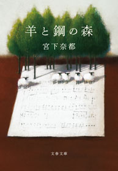
配信開始日 2018/02/09

第13回本屋大賞、第4回ブランチブックアワード大賞2015、第13回キノベス！2016 第1位......伝説の三冠を達成！
日本中の読者の心を震わせた小説。
ゆるされている。世界と調和している。
それがどんなに素晴らしいことか。
言葉で伝えきれないなら、音で表せるようになればいい。
高校生の時、偶然ピアノ調律師の板鳥と出会って以来、調律の世界に魅せられた外村。
ピアノを愛する姉妹や先輩、恩師との交流を通じて、成長していく青年の姿を、温かく静謐な筆致で綴った物語。
解説は『一瞬の風になれ』で本屋大賞を受賞した佐藤多佳子さん。
2018年6月には山崎賢人主演で映画化。憧れの調律師・板鳥を三浦友和、先輩調律師・柳を鈴木亮平、ピアニストの姉妹を上白石萌音、萌歌が演じています。
「才能があるから生きていくんじゃない。そんなもの、あったって、なくたって、生きていくんだ。あるのかないのかわからない、そんなものにふりまわされるのはごめんだ。もっと確かなものを、この手で探り当てていくしかない。（本文より）」
2
コンビニ人間
村田沙耶香
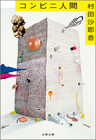
配信開始日 2018/09/04
「普通」とは何か？
現代の実存を軽やかに問う第155回芥川賞受賞作
36歳未婚、彼氏なし。コンビニのバイト歴18年目の古倉恵子。
日々コンビニ食を食べ、夢の中でもレジを打ち、「店員」でいるときのみ世界の歯車になれる──。
「いらっしゃいませー!!」
お客様がたてる音に負けじと、今日も声を張り上げる。
ある日、婚活目的の新入り男性・白羽がやってきて、そんなコンビニ的生き方は恥ずかしい、と突きつけられるが......。
累計100万部突破&20カ国語に翻訳決定。
世界各国でベストセラーの話題の書。
解説・中村文則
3
火花
又吉直樹
配信開始日 2017/02/10
第153回芥川賞を受賞し、2015年の話題をさらった「火花」が文庫化。
受賞記念エッセイ「芥川龍之介への手紙」を併録。
売れない芸人の徳永は、、天才肌の先輩芸人・神谷と出会い、師と仰ぐ。
神谷の伝記を書くことを乞われ、共に過ごす時間が増えるが、やがて二人は別の道を歩むことになる。
笑いとは何か、人間とは何かを描ききったデビュー小説。
累計発行部数283万部を誇る傑作！
4
ナナメの夕暮れ
若林正恭
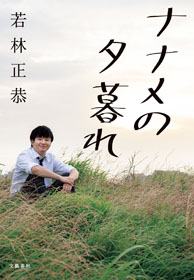
配信開始日 2018/08/30
オードリー若林、待望の新エッセイ集！
『完全版 社会人大学人見知り学部 卒業見込』から3年。
雑誌「ダ・ヴィンチ」での連載に、大幅に書き下ろしエッセイを加えた、「自分探し」完結編！
ゴルフに興じるおっさんなどクソだと決めつけていた。
恥ずかしくてスタバで「グランデ」が頼めない。
そんな自意識に振り回されて「生きてて全然楽しめない地獄」にいた若林だが、四十を手前にして変化が訪れる──。
ゴルフが楽しくなり、気の合う異性と出会い、あまり悩まなくなる。
だがそれは、モチベーションの低下にもつながっていて......
「おじさん」になった若林が、自分と、社会と向き合い、辿り着いた先は。
キューバへの旅行エッセイ『表参道のセレブ犬とカバーニャ要塞の野良犬』では第三回斎藤茂太賞を受賞。
「生き辛い」と感じている全ての人に送ります。
5
生涯投資家
村上世彰
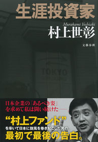
配信開始日 2017/06/21
「お金儲けは悪いことですか？」
2006年6月、ニッポン放送株をめぐるインサイダー取引を行った容疑で逮捕され、有罪判決を受けた村上ファンドの村上世彰氏。
本書は、株の世界に復帰し動向が注目されている村上氏の、最初にして最後の著書で、半生記であり、投資理念の解説書でもある。灘高─東大法─通産省を歩んだエリートがなぜ投資の世界に飛び込み、いったい何を試みたのか。投資哲学、日本企業、日本の経営者たちへの見方とは。
【目次】
はじめに──なぜ私は投資家になったか
第1章 何のための上場か
官僚として見た上場企業の姿/コーポレート・ガバナンスの研究 ほか
第2章 投資家と経営者とコーポレート・ガバナンス
私の投資術/累積投票制度を導入せよ──東芝の大きな過ち ほか
第3章 東京スタイルでプロキシーファイトに挑む
決戦の株主総会 ほか
第4章 ニッポン放送とフジテレビ
私が見たライブドア対フジテレビ ほか
第5章 阪神鉄道大再編計画
西武鉄道改革の夢──堤義明氏との対話/阪神タイガース上場プラン──星野仙一氏発言の衝撃
第6章 IT企業への投資──ベンチャーの経営者たち
楽天──三木谷浩史氏の積極的なM&A/ライブドア──既得権益に猛然と挑んだ堀江貴文氏 ほか
第7章 日本の問題点──投資家の視点から
日本の株式市場が陥った悪循環 ほか
第8章 日本への提言
コーポレート・ガバナンスの浸透に向けて/世界一の借金大国からの脱却 ほか
第9章 失意からの十年
東日本大震災について/フィンテックへの投資 ほか
6
月曜断食 「究極の健康法」でみるみる痩せる！
関口賢（関口鍼灸治療院）
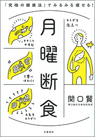
配信開始日 2018/01/26
いろんなダイエット法を試してきたけれど、何度も挫折してリバウンド！ そんなふうに感じているすべての人への最終回答が、のべ7万人を治療し、断食指導をしてきた鍼灸界のカリスマ・関口賢先生が提唱する「月曜断食」。
週1日、月曜日に何も食べず、〈良食→美食→断食〉のサイクルを繰り返すという、誰でもコスト0ですぐに取り組める超簡単な体質改善プログラムです。
食べ過ぎでバカになった胃腸が本来の機能を取り戻し、睡眠の質が向上すると、面白いように痩せていきます。多くの実践者が1ヶ月間で5～7kg痩せて、脂質異常症や生理不順、むくみ、肌荒れがあっという間に解消。取り組み期間中のお酒もOKで、しかもリバウンドしにくいのが特徴です。
月曜断食5つの効用
■食べないだけのシンプルな方法なので、かかるお金は0円！ 過食も間食も自然に減ってお財布にやさしい
■過食でダメージを受けていた胃腸の機能が回復するので代謝がよくなり、睡眠の質が劇的に高まる
■内蔵から綺麗になるので、美肌効果が高い
■単に体重が減るだけでなく、脂肪の燃焼しやすい体へと体質改善できるのでリハウンドしにくい
■PMS（月経前症候群）や生理不順のみならず、不妊、子宮筋腫の改善の声も
7
億男
川村元気
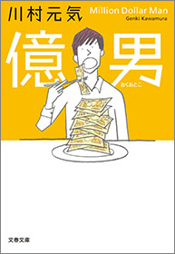
配信開始日 2018/03/09
佐藤健×高橋一生×大友啓史監督で2018年10月映画化。
本屋大賞にもノミネートされた新感覚マネーエンタテインメント小説！
「お金と幸せの答えを教えてあげよう」。宝くじで三億円を当てた図書館司書の一男は、大富豪となった親友・九十九のもとを訪ねる。だがその直後、九十九が三億円と共に失踪。ソクラテス、ドストエフスキー、福沢諭吉、ビル・ゲイツ。数々の偉人たちの言葉をくぐり抜け、一男のお金をめぐる三十日間の冒険が始まる。
川村元気さんはこの相容れない、お金と幸せをこの本で混ぜ合わせ、答えを導き出していく。それはさながら錬金術だ。（中略）
知っていたはずの事の違う側面を知り、知らなかった事を深く掘り下げ知っていくその体験を通して、自分だけの答えに辿り着く方法が「億男」には散りばめられている。──解説・高橋一生
8
うつ病九段 プロ棋士が将棋を失くした一年間
先崎 学

配信開始日 2018/07/13
棋士生活三〇年、ある日突然襲ってきた病魔
「ふざけんな、ふざけんな、みんないい思いしやがって」
藤井聡太ブームに沸く将棋界。そのウラで羽生世代の棋士が脳の病と闘っていた。
その発症から回復までを大胆に綴った心揺さぶる手記。
うつ病の頭には死のイメージが駆け巡るのだ。
うつ病の朝の辛さは筆舌に尽くしがたい。
あなたが考えている最高にどんよりした気分の十倍と思っていいだろう。
まず、ベッドから起きあがるのに最短でも十分はかかる。
ひどい時には三十分。その間、体全体が重く、だるく、頭の中は真っ暗である。
仕方がないのでソファーに横になるが、もう眠ることはできない。
ただじっと横になっているだけである。
頭の中には、人間が考える最も暗いこと、そう、死のイメージが駆け巡る。
私の場合、高い所から飛び降りるとか、電車に飛び込むなどのイメージがよく浮かんだ。
つまるところ、うつ病とは死にたがる病気であるという。
まさにその通りであった。（本文より）
9
ファーストラヴ
島本理生
配信開始日 2018/07/09
父親を刺殺した女子大生は、警察の取り調べに「動機はそちらで見つけてください」と答えたという──。
「家族」という名の迷宮を描き尽くす傑作長編。第159回直木賞受賞作。
夏の日の夕方、多摩川沿いを血まみれで歩いていた女子大生・聖山環菜が逮捕された。
彼女は父親の勤務先である美術学校に立ち寄り、あらかじめ購入していた包丁で父親を刺殺した。
環菜は就職活動の最中で、その面接の帰りに凶行に及んだのだった。
環菜の美貌も相まって、この事件はマスコミで大きく取り上げられた。
なぜ彼女は父親を殺さなければならなかったのか？
臨床心理士の真壁由紀は、この事件を題材としたノンフィクションの執筆を依頼され、取材を始める。
自らも夫とその弟との微妙な関係に悩まされながら、環菜やその周辺の人々と面会を続ける由紀。
そこから浮かび上がってくる、環菜の過去とは？
10
土曜ナイトドラマ「おっさんずラブ」公式ブック
監修 テレビ朝日

配信開始日 2018/08/07
ある日、僕は部長に告白された──。
ダメ男・春田にモテ期到来？ 乙女なおっさん部長とドSイケメン後輩に告白されるも二人は男性で...。 胸キュン必至、話題沸騰ドラマの公式ブックが誕生！ キャストインタビューからキャラクターの裏設定、 天空不動産オフィスの内部、春田家の間取り、ドラマに登場したお弁当レシピまで大公開！
●田中圭さん、吉田鋼太郎さん、林遣都さん、スペシャルインタビュー&撮りおろし
●キャラクター紹介 誕生日、血液型から好きな食べ物、嫌いな食べ物、高校時代の部活など、ドラマでは明かされなかった裏設定を大公開
●人物相関図
●はるたん【SPRING】collection 部長が恋に落ちてしまうのもうなずける、太陽のような魅力に溢れた「はるたん写真」
●はるたん7変化 スーツからスウェット、きぐるみまで着こなしてしまう、はるたんの素敵コーデ7
●登場人物の恋の軌跡 春田創一 揺れる心/牧凌太 尽くす恋/黒澤武蔵 攻める恋/荒井ちず 気付けなかった想い/栗林歌麻呂 空前絶後の恋/武川政宗 諦めきれない恋/黒澤蝶子 見守る愛
●読んでまるわかりの各話紹介
●天空不動産東京第二営業所 抜群のチームワークを生むオフィスの内部をアッキーこと宮島亜紀がご案内
●間取り公開！ 春田の家
●居酒屋わんだほう
●マイマイの「新しい恋、はじめました」かるた
●じっくり読みたい文字のやりとり 「営業虎の巻」「営業日報」「メール」「手帳&観察日記」「カレーメモ」など完全収録
●眞島秀和さんと考察する"武川という男"12の裏設定 謎めく男、武川政宗の気になるバックグラウンドを眞島さんと一緒に考察、いや妄想!?
●待望のレシピ紹介！ 牧と武蔵のごはん対決
●おっさんずラブロケ地ガイド
●「おっさんずラブ」制作秘話 脚本家徳尾浩司さん×プロデューサー貴島彩理さん
●pixiv募集企画イラスト
●エピローグ
●キャスト&スタッフ
●はるたん撮りおろしグラビア「君に会えてよかった。」
11
カルト村で生まれました。
高田かや
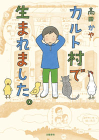
配信開始日 2016/02/12
「平成の話とは思えない！」「こんな村があるなんて！」と、WEB連載時から大反響!!
「所有のない社会」を目指す「カルト村」で生まれ、19歳のときに自分の意志で村を出た著者が、両親と離され、労働、空腹、体罰が当たり前の暮らしを送っていた少女時代を回想して描いた「実録コミックエッセイ」。
〈カルト村ってどんなとこ？〉
●大人と子供の生活空間が別々
●朝5時半起床で労働
●布団は2人で1組
●食事は昼と夜のみ
●卵ミルクを飲ませられる
●お小遣いはもらえない
●すべてのモノが共有で、服もお下がり
●男子は丸刈り、女子はショートカット
●ビンタ、正座、食事抜きなど体罰は当たり前
●手紙は検閲される
●テレビは「日本昔ばなし」のみ
●漫画は禁止、ペットも飼えない
●自然はいっぱい。探険など外遊びは楽しい♪
12
清原和博 告白
清原和博
配信開始日 2018/07/27
「自分の人生を振り返って、どこからおかしくなったのかとか、狂い始めたんだろうとか。苦しかったですね......」
覚醒剤取締法違反で逮捕されてから2年。栄光と転落の半生と、自らの罪を悔いながら、鬱病、薬物依存とたたかう日々を赤裸々に綴る。
岸和田リトルで野球を始めた少年期から、怪物の名をほしいままにしたPL学園と甲子園の記憶、盟友・桑田真澄と袂をわかったドラフト事件の真相とその後。西武ライオンズで4番として輝いた瑞々しい日々と数々の栄冠。憧れの巨人移籍後の重圧と屈辱──。
野球の申し子、甲子園のヒーローはなぜ、堕ちたのか。
執行猶予中、1年間にわたりすべてを明かした「告白」。
これは、どうしようもない、人間らしさの記録である。
【告白 1】 岸和田の少年
【告白 2】 人生を変えた16の夏
【告白 3】 甲子園のライバル、そして桑田のこと
【告白 4】 1985年夏、最初で最後の瞬間
【告白 5】 「裏切り」のドラフト
【告白 6】 ドラフトの「傷」
【告白 7】 黄金ルーキーの手帳
【告白 8】 無冠の帝王のジレンマ
【告白 9】 FA宣言──巨人という決断
【告白10】 松井敬遠、清原勝負の苛立ち
【告白11】 肉体改造とグリーニーの理由
【告白12】 ピアスに込めた反骨心
【告白13】 巨人解雇と涙の「とんぼ」
【告白14】 鳴り止まぬ仰木さんの電話
【告白15】 最後のひと花
【告白16】 初めて引退を考えた日
【告白17】 ユー・アー・オールドマン
【告白18】 清原和博は二度死ぬ
【告白19】 526本目のホームラン
【告白20】 俺、もうやめるわ
【告白21】 生まれ変わったら、もう一度
【告白22】 覚醒剤と心の穴
【告白23】 今もまだ暗闇の中にいる
13
闇の叫び アナザーフェイス９
堂場瞬一
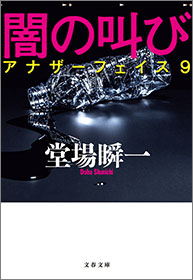
配信開始日 2018/03/09
イクメン刑事・大友鉄「最後の」事件！
子育てのため長く事務方の部署で刑事としてのモラトリアムの時代を過ごしてきた大友が、新たな岐路を迎えるシリーズ最終作。
最愛の妻を亡くして、残された息子の優斗を独り身で育てることになり、捜査一課から閑職の刑事総務課に移ったイクメン刑事の大友鉄。
その時々で事件の捜査の手伝いをしてきた彼はある日、息子のかつての同級生の母親からの電話を受ける。
娘が通う中学校の保護者が何者かに襲われたのだが、噂だけで真実が分からないと言う。
さらにその後、別の父兄が襲われ、大友はその捜査に加わることに。
容疑者は二転三転。やがて捜査を進めていくうちに、一人の男性教師が浮上する。
だが、その動機とははたして──。
成長した息子が高校受験を控え、自らも今後の人生と新たに向き合うことになる大友。
好評シリーズ「アナザーフェイス」がついに完結！
解説・小橋めぐみ
＊本作品には１～９巻と『親子の肖像 アナザーフェイス０』をまとめた『合本 アナザーフェイス』があります
14
ゆるめる力 骨ストレッチ
松村 卓
配信開始日 2015/08/28
30秒でラクになる！いま最も注目される革命的ストレッチ
「骨ストレッチ」とは、筋肉ではなくて骨の使い方を知ることで身体と心をラクにしていくメソッドです。日本代表クラスのトップアスリートからアマチュアまで多くのスポーツ選手が実践し、いま大きな注目を集めています。
それも、筋トレのような激しい動作をする必要は一切ありません。老若男女、誰にでも簡単にできて、効果は抜群！重要なのは、力を入れることよりも、力を抜くこと。
身体を固めることより、ゆるめること。
「骨ストレッチ」を実践すると、短時間で身のこなしが軽やかになり、肩こりや腰痛、膝痛からも解放されます。また、少々無理をしても疲れがたまりにくくなるので、毎日を心地よく過ごせるようにもなっていきます。
本書では、これまでアスリート向けの著書を上梓してきた著者が、はじめて一般向けに、既存のトレーニングの常識を覆す独自のメソッドをわかりやすく紹介します。
15
我が名はネロ １
安彦良和
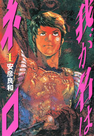
配信開始日 2018/03/01
電子書籍で復刊！ 「機動戦士ガンダム」の安彦良和氏が描く、暴君ネロの激動の人生
紀元１世紀、実母・アグリッピナの計略により16歳にしてローマ帝国を手に入れた皇帝ネロ。
家庭教師セネカの指導のもと、安定した治世を敷く一方で、正妻の側女・アクテを寵愛し、奴隷の剣闘士・レムスを側に置くなど奔放な生活を送っていた。
肉欲にふけり自分から離れていくネロに、母・アグリッピナは激しく干渉するが、ネロはさらに反発。そしてある恐ろしい計画を企てる──
ローマの姿は今日の社会そのままといっていいでしょう。爆薬も車も電気器具も立派なキリスト教会も無いけれど、ネロの時代は、そしてネロの精神の在り様は、たぶんそのまま現代につながると思います。そして、そう思ったのが、僕がこのお話を描いた理由です。（作者あとがきより）
16
サイコパス
中野信子
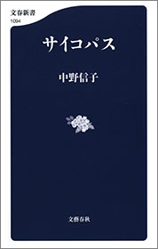
配信開始日 2016/11/18
平気でウソをつき、罪悪感ゼロ......そんな「あの人」の脳には秘密があった！
外見はクールで魅力的。会話やプレゼンテーションも抜群に面白い。
しかし、じつはトンでもないウソつきである。不正や捏造が露見しても、まったく恥じることなく平然としている。
ときには、あたかも自分が被害者であるかのようにふるまう。
残虐な殺人や善良な人を陥れる犯罪を冷静沈着に遂行する。
他人を利用することに長け、人の痛みなどこれっぽっちも感じない。
──昨今、こうした人物が世間を騒がせています。しかも、この種の人々を擁護する人も少なくありません。そうした人物は高い確率で「サイコパス」なのです。
もともと「サイコパス」とは連続殺人鬼などの反社会的な人格を説明するために開発された診断上の概念です。しかし精神医学ではいまだ明確なカテゴリーに分類されておらず、誤ったイメージやぼんやりとした印象が流布していました。
ところが近年、脳科学の劇的な進歩により、サイコパスの正体が徐々に明らかになっています。
脳内の器質のうち、他者に対する共感性や「痛み」を認識する部分の働きが、一般人とサイコパスとされる人々では大きく違うことがわかってきたのです。
しかも、サイコパスとは必ずしも冷酷で残虐な犯罪者ばかりではないのです。
大企業のCEO、政治家、弁護士、外科医など、大胆な決断をしなければならない職業の人にサイコパシー傾向の高い人が多いという研究結果もあります。
最新脳科学が、私たちの脳に隠されたミステリーを解き明かします。
17
八咫烏シリーズ外伝 まつばちりて【文春e-Books】
阿部智里
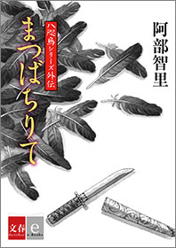
配信開始日 2018/01/26
新世代和風ファンタジー「八咫烏シリーズ」外伝
４作目の主人公は、第２巻『烏は主を選ばない』に登場した秘書官の松韻
第２部始動前に読んでおきたい一編！
谷間の女郎宿で生まれたまつは、大紫の御前に拾われ松韻と名を変える。
女としての生を捨て、男として官職を得た彼女だったが、激しく対立する一人の男が現れて──。
18
泥濘
黒川博行
配信開始日 2018/06/29
ドンデン返しに次ぐドンデン返しのスピード感がたまらない！
疫病神シリーズ間違いなしの最高傑作
「待たんかい。わしが躾をするのは、極道 と半グレと、性根の腐った堅気だけやぞ」
疫病神シリーズの名コンビ、桑原と二宮の 今度の標的は警察官OBが作る自称・親睦団体の「警慈会」。
老人ホームにオレオレ詐欺......。
老人を食い物にする腐り切った警察OBに二人は挑むが、二宮は拉致、桑原は銃撃を受け心肺停止になってしまう。
「おまえ、おれを脅しとんのか」
「脅し？ わしは値踏みをしてるだけや。おまえがどれほどのワルか、をな」
「社会のダニが一人前のことをいうやないか。ダニはダニらしいに、女のヒモになるか、シャブの売人でもして食うたらどうや」
「わしはダニかい」
「ダニはいいすぎた。クズや、おまえは」
警察OBのドンを相手に一歩も引かない桑原と二宮を待つ運命は？
19
さよなら、カルト村。 思春期から村を出るまで
高田かや

配信開始日 2017/02/03
「所有のない社会」を目指す「カルト村」で生まれ、過酷な労働や理不尽な掟に縛られた村の暮らしを受け入れて育ってきた著者は、なぜ自ら村を出たのか？
村で過ごした13歳から19歳までの青春期を描き、当時のマスコミを騒がせた村の実態に迫る、衝撃の実録コミックエッセイ。朝日新聞、毎日新聞、新潮45、TVブロス、アンアンなど、数多くの書評欄で取り上げられ、「その後の話が読みたい！」の声が殺到した話題作『カルト村で生まれました。』の待望の続編！
思春期をむかえた村の子の毎日（音楽、男女交際、一般の本を読むことは禁止。男子の部屋も女子が掃除！）。「個別ミーティング」や内容を大人にチェックされる「日記」など、思想をコントロールする村独自の新たなシステムがスタート。結婚相手は年の離れたおじさん!? 村の「調整結婚」など驚愕のエピソードが明らかに──。
20
13・67
陳 浩基

配信開始日 2017/09/30
2017年 週刊文春ミステリーベスト10、本格ミステリ・ベスト10 海外篇第１位
2018年本屋大賞 翻訳小説部門 第２位
華文（中国語）ミステリーの到達点を示す記念碑的傑作！
現在（2013年）から1967年へ、1人の名刑事の警察人生を遡りながら、香港社会の変化（アイデンティティ、生活・風景、警察=権力）をたどる逆年代記（リバース・クロノロジー）形式の本格ミステリー。どの作品も結末に意外性があり、犯人との論戦やアクションもスピーディで迫力満点。
本格ミステリーとしても傑作だが、雨傘革命（2014年）を経た今、67年の左派勢力（中国側）による反英暴動から中国返還など、香港社会の節目ごとに物語を配する構成により、市民と権力のあいだで揺れ動く香港警察のアイデンティティを問う社会派ミステリーとしても読み応え十分。
2015年の台北国際ブックフェア賞など複数の文学賞を受賞。世界12カ国から翻訳オファーを受け、各国で刊行中。映画化件はウォン・カーウァイが取得した。著者は第2回島田荘司推理小説賞を受賞。本書は島田荘司賞受賞第1作でもある。
21
合本 坂の上の雲【文春e-Books】
司馬 太郎
太郎

配信開始日 2016/01/01
明治維新をとげ、近代国家の仲間入りをした日本は、息せき切って先進国に追いつこうとしていた。この時期を生きた四国松山出身の三人の男達─日露戦争においてコサック騎兵を破った秋山好古、日本海海戦の参謀秋山真之兄弟と文学の世界に巨大な足跡を遺した正岡子規を中心に、昂揚の時代・明治の群像を描く長篇小説、全八冊が待望の合本化！
22
日本4.0 国家戦略の新しいリアル
エドワード・ルトワック／奥山真司・訳
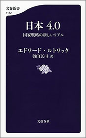
配信開始日 2018/09/20
内戦を完璧に封じ込めた「1.0」=江戸、包括的な近代化を達成した「2.0」=明治、弱点を強みに変えた「3.0」=戦後。
そしていま、日本は自ら戦える国「4.0」に進化する！
世界的戦略家による緊急提言！
日本に核武装はいらない。
必要なのは「先制攻撃能力」と「作戦実行メンタリティ」だ。
[ルトワック語録より]
●日本のチャンスは北朝鮮の非核化が本格的に開始されてからだ。
●戦争で必要なのは、勝つためになんでもやるということだ。そこにはズルをすることも含まれる。目的は「勝つこと」であり、「ルールを守ること」ではないからだ。
●見事なパレードを行う軍隊は、ほぼ実戦で役に立たない。無駄なことにコストを使っているからだ。
●米中の対立の主戦場は、もはや軍事的な領域から、地経学（ジオエコノミックス）的領域に移りつつある。
●もし日本が本当にリアルな戦略を考えるならば、最優先されるべきは少子化対策だ。
23
合本 竜馬がゆく（一）～（八）【文春e-Books】
司馬
太郎
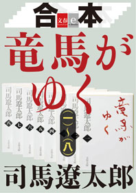
配信開始日 2014/12/12
総発行部数2500万部超！ 坂本竜馬の奇蹟の生涯を壮大なスケールで描く、司馬文学の金字塔、全８巻（文春文庫）が合本に。
土佐の郷士の次男坊に生まれながら、ついには維新回天の立役者となった坂本竜馬の奇蹟の生涯。司馬 太郎の永遠のベストセラーが半世紀の時を経て、電子版で新たによみがえる！
24
デジタル原色美女図鑑 山崎真実 Black
萩庭桂太・撮影／文藝春秋電子書籍編集部・編
配信開始日 2018/09/07
ドラマ・舞台・グラビアなどマルチに活躍する山崎真実がデジタル原色美女図鑑に初登場！
本作のテーマは"Black"。衣装を全て黒色に統一し、山崎真実の大人な魅力を引き出しました。
黒いボディースーツや黒いランジェリー、そして最後は黒い浴槽の中、一糸まとわぬ姿に。
かっこよくて美しくてセクシー。山崎真実のグラビア新章がここに!!
25
デジタル原色美女図鑑 渡辺麻友 ひとりだち【文春e-Books】
中村和孝・撮影／文藝春秋電子書籍編集部・編

配信開始日 2018/06/29
まゆゆ AKB48卒業後初の電子写真集!!
2017年12月のNHK紅白歌合戦をもって、惜しまれながらAKB48グループを卒業した、"まゆゆ"こと渡辺麻友さんの電子写真集。「週刊文春」2018年GW特大号に掲載されたグラビアページに、アザーカットを足した豪華版です。背中の見えるセクシーなドレス姿や大人っぽい表情など、ファン必見の内容！
26
合本 検察側の罪人【文春e-Books】
雫井脩介
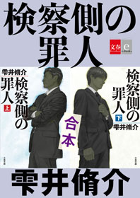
配信開始日 2017/06/16
木村拓哉×二宮和也、スター二人の初共演でも話題の『検察側の罪人』が上下巻合わせた待望の合本化！
蒲田の老夫婦刺殺事件の容疑者の中に、時効事件の重要参考人・松倉の名前を見つけた最上検事は、今度こそ法の裁きを受けさせるべく松倉を追い込んでいく。
最上に心酔する若手検事の沖野は厳しい尋問で松倉を締め上げるが、だんだんと最上の強引なやり方に疑問を抱くようになり──。
人が人を裁くとは？
慟哭のラストが胸を締めつける感動の巨篇！
27
ありがとうって言えたなら
瀧波ユカリ
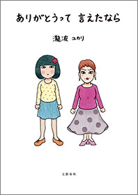
配信開始日 2018/03/09
決して仲のいい母娘じゃなかった。
だからこそ、今、お母さんに伝えたいことがある──。
余命宣告、実家の処分、お墓や遺影のこと、最後の旅行、そして緩和ケア病棟へ。
「母の死」を真正面から描いた、涙なしでは読めないコミックエッセイ。
***
「すい臓のほうに何かあるって」。
大阪で暮らす姉から、エネルギッシュで毒舌でコワモテの美人の母が、余命1年のすい臓がんだと告げられた。
釧路で一人暮らしをしていた母は、看護師をしている姉の元へ身を寄せ、通院と治療が始まった。抗がん剤の副作用や痛みに気分が浮き沈みし、母のイライラは最高潮。心はガチガチに閉じていて。
余命宣告、実家の処分、お墓や遺影のこと、家族総出の最後の旅行、そして、緩和ケア病棟へ。誰もが経験する大切な人との別れは、想像と違うことばかり......。
決して仲のいい母娘じゃなかったかもしれないけれど、だからこそ、今、お母さんに伝えたいことがある──。
思わず「お母さん」ってつぶやきたくなるコミックエッセイです。
28
学校では教えない「社会人のための現代史」 池上彰教授の東工大講義 国際篇
池上 彰
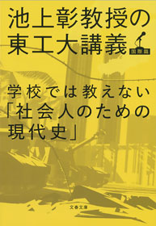
配信開始日 2015/11/13
冷戦後の15年を知れば、混迷の現代が見える！
EUの挫折、イスラム国の登場、エネルギー戦争、反日の原点──すべて東西冷戦後に原点が。ビジネスにも投資にも現代史は必須です！
実況中継スタイルで大好評の東工大講義シリーズ第3弾は「東西冷戦後」の現代史。時間が足りず、学校では教わらなかった人も多いのではないでしょうか？ しかし安保法制も、EUや難民問題も、「イスラム国」のテロも、中国・韓国の「反日」も、混迷の原点はすべてこの期間にあります。自分の頭で考えたい、すべての人に！
29
情報なき国家の悲劇 大本営参謀の情報戦記
堀 栄三
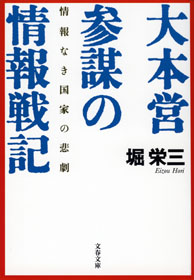
配信開始日 2015/08/07
情報を扱う全ての人へ。先人の貴重な教訓に溢れた名著。
「太平洋各地での玉砕と敗戦の悲劇は、日本軍が事前の情報収集・解析を軽視したところに起因している」
─太平洋戦中は大本営情報参謀として米軍の作戦を次々と予測的中させて名を馳せ、戦後は自衛隊統幕情報室長を務めたプロが、その稀有な体験を回顧し、情報に疎い日本の組織の"構造的欠陥"を剔抉する。
戦史ファン、歴史ファンはもちろん、現代のビジネスパーソンに最適。
「企業の方々が読まれる場合には、戦略は企業の経営方針、戦術は職場や営業の活動、戦場は市場（マーケット）、戦場の考察は市場調査（マーケティング・リサーチ）とでも置き換えて読んでくだされば幸甚である」（まえがき）
30
合本 燃えよ剣（上）～（下）【文春e-Books】
司馬
太郎
配信開始日 2014/12/12
激動の幕末、ただ剣のみを信じ、日本史上に類をみない酷烈な軍事組織を創りあげた新選組副長、土方歳三。鳥羽伏見から函館五稜郭の落城までを戦い続け、歴史に無類の爪あとを残した男の華麗なる人生とは──。
「男の典型を一つずつ書いてゆきたい。そういう動機で私は小説書きになったような気がする。（中略）歳三は、それまでの日本人にはなかった組織というあたらしい感覚をもっていた男で、それを具体的に作品にしたのが新選組であったように思われる。その意味だけでいえば、文化史的な仕事を、この男の情熱と才能はなしとげたのではないか」（あとがきより）。
時代の逆流に抗し剣と恋に生きた新選組副長、土方歳三の凄絶な生涯を描き「竜馬がゆく」と人気を二分する司馬文学の最高峰、待望の合本！
31
イニシエーション・ラブ
乾 くるみ
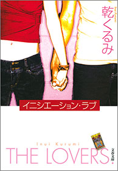
配信開始日 2007/09/20
「必ず二回読みたくなる」と絶賛された傑作ミステリー。
僕がマユに出会ったのは、人数が足りないからと呼びだされた合コンの席。理系学生の僕と、歯科衛生士の彼女。夏の海へのドライブ。ややオクテで真面目な僕らは、やがて恋に落ちて......。甘美で、ときにほろ苦い青春のひとときを瑞々しい筆致で描いた青春小説──と思いきや、最後から二つめのセリフ（絶対に先に読まないで！）で、本書はまったく違った物語に変貌してしまう。
2015年映画化。 主演 松田翔太、前田敦子、木村文乃／監督 堤幸彦
32
オレたちバブル入行組
池井戸 潤

配信開始日 2013/08/02
2013年の流行語大賞になった「倍返し」を生んだドラマ『半沢直樹』（堺雅人主演）原作！
バブル期に大手銀行に入行し、今は大阪西支店融資課長の半沢直樹。支店長の命令で無理に融資の承認を取り付けた会社が倒産した。すべての責任を半沢に押しつけようと暗躍する支店長。四面楚歌の半沢に残された手は債権回収しかない──。夢多かりし新人時代は去り、気がつけば辛い中間管理職。しかも入行以来いいことなしのバブル世代。しかし嘆いてばかりじゃ始まらない。顔を上げろ、プライドを捨てるな、そのうち負け分を取り戻してやる！
働く者すべての勇気を奮い起こさせる痛快エンターテインメント。
33
爆裂通貨 警視庁公安部・青山望
濱 嘉之
配信開始日 2018/04/10
ハロウィンの渋谷で仮装集団の殺人事件が！ しかも被害者は無戸籍者──背後の北朝鮮とテロの予兆を、公安部エース青山は防げるか？
ハロウィンの渋谷で、マリオの仮装で見事な行進をする集団が注目を集めていた。
直後にATM爆破と殺人が同時多発！
しかもハワイでも──これは国際テロの予兆なのか？
警視庁公安部のエース青山望が同期カルテットと共に辣腕を発揮。
日本の隙に忍び寄る北朝鮮の影を追う！
公安を知りすぎた著者の迫真シリーズ第11弾。
34
彼女は頭が悪いから
姫野カオルコ
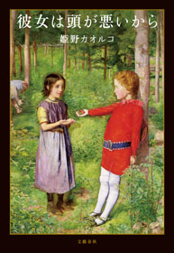
配信開始日 2018/07/20
私は東大生の将来をダメにした勘違い女なの？
深夜のマンションで起こった東大生5人による強制わいせつ事件。非難されたのはなぜか被害者の女子大生だった。
現実に起こった事件に着想を得た衝撃の書き下ろし「非さわやか100%青春小説」！
横浜市郊外のごくふつうの家庭で育った神立美咲は女子大に進学する。
渋谷区広尾の申し分のない環境で育った竹内つばさは、東京大学理科1類に進学した。
横浜のオクフェスの夜、ふたりが出会い、ひと目で恋に落ちたはずだった。しかし、人々の妬み、劣等感、格差意識が交錯し、東大生5人によるおぞましい事件につながってゆく。
被害者の美咲がなぜ、「前途ある東大生より、バカ大学のおまえが逮捕されたほうが日本に有益」「この女、被害者がじゃなくて、自称被害者です。尻軽の勘違い女です」とまで、ネットで叩かれなければならなかったのか。
「わいせつ事件」の背景に隠された、学歴格差、スクールカースト、男女のコンプレックス、理系VS文系......。内なる日本人の差別意識をえぐり、とことん切なくて胸が苦しくなる「事実を越えた真実」。すべての東大関係者と、東大生や東大OBOGによって嫌な思いをした人々に。娘や息子を悲惨な事件から守りたいすべての保護者に。スクールカーストに苦しんだことがある人に。恋人ができなくて悩む女性と男性に。
この作品は彼女と彼らの物語であると同時に、私たちの物語です。
35
八咫烏シリーズ外伝 ふゆきにおもう【文春e-Books】
阿部智里
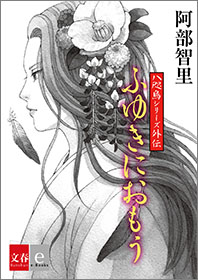
配信開始日 2017/07/28
新世代和風ファンタジー「八咫烏シリーズ」外伝
行方不明になった垂氷郷の郷長の次男・雪哉と三男の雪稚。長男の雪馬と母の梓は必死で幼い彼らを探す。実は雪哉だけは産みの母が異なる北家当主の姫君だった。
雪哉の出生の秘密が明らかになる一作。
36
帳簿の世界史
ジェイコブ・ソール／村井章子・訳
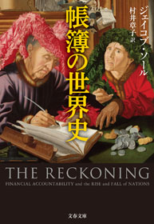
配信開始日 2018/04/10
「権力とは財布を握っていることである」
アダム・スミス、カール・マルクス、マックス・ウェーバー......。
彼らが口を揃えて主張していた「帳簿」の力とは、一体何なのか。
これまでの歴史家たちが見逃してきた「帳簿の世界史」を、会計と歴史のプロフェッショナルが初めて紐解く。
・なぜスペイン帝国は栄え、没落したのか。
・なぜフランス革命は起きたのか。
・なぜアメリカ独立は成功したのか。
・なぜ日本は急速に列強へ追いつくことができたのか。
その歴史の裏には全て、帳簿を駆使する会計士たちがいた！
解説 山田真哉
37
お母さんの「敏感期」 モンテッソーリ教育は子を育てる、親を育てる
相良敦子
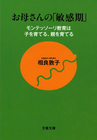
配信開始日 2013/10/11
20世紀初頭、イタリアのマリア・モンテッソーリ博士が生み出し、今も世界中で支持されている「モンテッソーリ教育」。その一番の特徴は、子どもには特定の事柄に特別な感受性を発揮する「敏感期」があることを指摘し、その重要性を唱えたこと。
将棋界に旋風を巻き起こした藤井聡太七段が幼児期に受けたという報道により、モンテッソーリ教育に注目が集まっています。
本書は、わが国のモンテッソーリ教育の第一人者である著者が豊富なイラストとともに解説する、育児書の決定版です！
38
八咫烏シリーズ外伝 あきのあやぎぬ【文春e-Books】
阿部智里
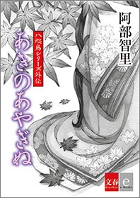
配信開始日 2018/06/22
累計100万部突破！ 阿部智里が贈る新世代和風ファンタジー「八咫烏シリーズ」外伝
亡くなった夫に借金が発覚し、二人の幼子を抱えて困窮する環。そんな彼女に「私のところに来るかい？」と声をかけたのは、西本家の次期当主である顕彦だった。言動からは軽薄な印象が漂い、さらには「十八人の妻がいる」という顕彦だが、環は生活のため側室入りを決意する。
第一巻「烏に単は似合わない」以前のエピソードです。
39
ラオスにいったい何があるというんですか？
村上春樹
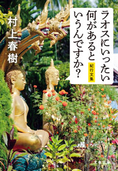
配信開始日 2018/04/10
そこには特別な光があり、特別な風が吹いている──ボストンの小径とボールパーク、アイスランドの雄大な自然、「ノルウェイの森」を書いたギリシャの島々、フィンランドの不思議なバー、ラオスの早朝の僧侶たち、ポートランドの美食やトスカナのワイン、そして熊本の町と人びと──旅の魅力を書き尽くす、村上春樹の紀行文集、待望の文庫化！カラー写真を多数収録。
40
世界を変えた10冊の本
池上 彰
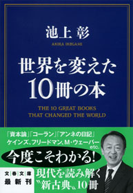
配信開始日 2014/03/14
『聖書』の基礎を知ることで見えてくる歴史の流れとは？ 革命の原動力となった『資本論』の論理とは？
『コーラン』『種の起源』『アンネの日記』あるいはケインズ、フリードマンの経済書まで、世界に大きな影響を与えた10冊の本を池上さんが厳選、その内容をわかりやすく紹介するとともに、歴史的意義を解き明かします。私たちが生きる現代を形作っている思想や、日々メディアで報じられている国際問題の源泉がこの1冊でわかる！
41
八咫烏シリーズ外伝 ゆきやのせみ【文春e-Books】
阿部智里
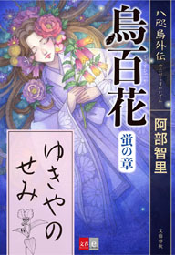
配信開始日 2018/05/10
100万部突破！ 新世代和風ファンタジー「八咫烏シリーズ」
短編集『八咫烏外伝 烏百花 蛍の章』の一編を電子書籍で配信！
雪哉が若宮に忠誠を誓ってから二ヶ月。地方の巡啓中に放蕩癖が祟り、食い逃げの濡れ衣を着せられ投獄されてしまった若宮。雪哉は主君の身の潔白を証明できるのか？
第三巻『黄金の烏』と第四巻『空棺の烏』の狭間のエピソード。
雪哉と若宮、その側近・澄尾の三人が織り成す、コミカルな一作。
42
八咫烏シリーズ外伝 わらうひと【文春e-Books】
阿部智里
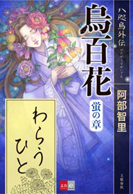
配信開始日 2018/05/10
100万部突破！ 新世代和風ファンタジー「八咫烏シリーズ」
短編集『八咫烏外伝 烏百花 蛍の章』の一編を電子書籍で配信！
猿と八咫烏の最終決戦から半年。桜花宮の筆頭女房・真赭の薄のもとに現れた元山内衆・澄尾が彼女に投げかけた衝撃の言葉とは？ 一方、南領出身の山内衆・千早と、その妹・結の兄妹関係も変化を迎え......。
第六巻『弥栄の烏』の幕間、人気キャラクターたちの関係の変化を描く、必読の短編。
43
「空気」の研究
山本七平
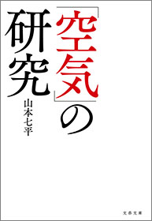
配信開始日 2013/06/07
昭和期以前の人びとには「その場の空気に左右される」ことを「恥」と考える一面があった。しかし、現代の日本では"空気"はある種の"絶対権威"のように驚くべき力をふるっている。あらゆる論理や主張を超えて、人びとを拘束するこの怪物の正体を解明し、日本人に独得の伝統的発想、心的秩序、体制を探った名著。1983年刊行の超ロングセラー！
44
2週間で人生を取り戻す！ 勝間式汚部屋脱出プログラム
勝間和代
配信開始日 2016/05/13
最後の片付け本！ これでダメなら諦めろ
モノにまみれていた勝間和代氏が、8割の物を捨て汚部屋脱出に成功。ため込み癖を脱するコツは？ その効果は？ ロジカルに説明。
第一章 私が「断捨離」に目覚めた理由
第二章 捨てて得られる現世ご利益
第三章 まずはマインドを変える！
第四章 成功のための基本ルール
第五章 何を残して、何を捨てるか？ 初級篇
第六章 何を残して、何を捨てるか？ 中級～上級篇
第七章 リバウンドしない生活習慣
第八章 汚部屋脱出で、行き詰まった人生も回りだす
付 録 勝間式 汚部屋脱出プログラム書き込み式シート
45
辞令
高杉 良

配信開始日 2017/11/09
ビジネスマンの命運は、たった1枚の紙切れに左右される！
テレビ・ビデオ・音響機器メーカーとして世界中で事業を展開する大企業、エコー・エレクトロニクス工業の宣伝部副部長・広岡修平に、突然、辞令が突きつけられた。異動先は「人事部付」。それまで社内の出世レースのトップグループに入っていた広岡に、左遷される理由は思い当たらない。
仕事に対する情熱と正義感では引けをとらず、社内でも高く評価されていたはずの広岡が脱落したのは、なぜか？
その内実を自ら調査し始めると、自らの後任者が現会長の息子であることが判明。ファミリー企業に巣食う利己的な思惑と、会社内に蔓延する保身、讒言、足の引っ張り合いの実態が見えてきた......。
ビジネスマンの人生を左右する「辞令」のカラクリを暴き出すビジネス小説界の「現代の新古典」！
解説・加藤正文
46
走ることについて語るときに僕の語ること
村上春樹

配信開始日 2015/08/28
走ることについて語りつつ、小説家としてのありよう、創作の秘密、そして「彼自身」を初めて説き明かした画期的なメモワール。
47
オレたち花のバブル組
池井戸 潤

配信開始日 2013/08/02
『半沢直樹』（堺雅人主演）原作本第２弾！ 東京中央銀行のバブル入行組・半沢直樹に押しつけられた「頭取命令」──それは巨額損失を出した老舗ホテルの再建。銀行内部の見えざる暗躍、金融庁の「最強の検査官」との対決。出向先での執拗ないじめ。次から次へと襲い来る逆境を、半沢はおのれの正義で迎え撃つ。オレたちは絶対に負けられない。まとめて面倒みてやる。やられたら倍返しだ！ "バブル組"の男たちのプライドが胸を熱くさせる。
48
闇ウェブ
セキュリティ集団スプラウト
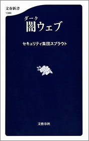
配信開始日 2016/07/29
買えないものは何もない！ 悪魔のネットショッピング。
麻薬、児童ポルノ、偽造パスポート、偽札、個人情報、サイバー攻撃、殺人請負、武器......「秘匿通信技術」と「ビットコイン」が生みだしたサイバー空間の深海にうごめく「無法地帯」の驚愕の実態！ 私たちの生活を便利にしてくれるインターネットの奥底には異様な世界があった。自分の家族や会社を守るための必読書。
■序 章 現実社会を動かすサイバー空間■
■第1章 サイバー闇市場の実態■
検索エンジンの届かない世界／麻薬の一大取引所／偽造パスポート、偽札、児童ポルノ、殺人請負 など
■第2章 盗まれた個人情報の行方■
世界中で売買される個人情報の値段／医療・保険データは「カネになる」／流出情報が「成りすまし」に使われる？ など
■第3章 サイバー闇市場へのアクセス■
ダークウェブを形作る匿名通信ツール「Tor」／闇市場を拡大させた「ビットコイン」／悪のマーケットプレイス など
■第4章 「Tor」と捜査機関の攻防■
遠隔操作ウイルス事件と日本警察／アメリカの諜報機関も頭を悩ます／Torにも弱点がある!? など
■第5章 最大の闇市場「シルクロード」の黒幕逮捕■
史上最悪のサイバー闇市場／8000万ドル荒稼ぎした黒幕「ウルブリヒト」の素顔／取り沙汰された「マウントゴックス」との関係 など
■終 章 終わりなきサイバー犯罪との戦い■
盗まれたFBI長官の個人情報／日本のサイバーセキュリティ体制の現実／医療ビッグデータのリスク／フィンテックも危ない など
49
最後の将軍 徳川慶喜
司馬
太郎
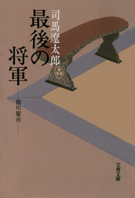
配信開始日 2017/04/21
ペリー来航以来、開国か攘夷か、佐幕か倒幕かをめぐって、朝野は最悪の政治的混乱に陥ってゆく。
文久二年、将軍後見職として華々しく政界に登場した、のちの十五代将軍徳川慶喜は、優れた行動力と明晰な頭脳をもって、敵味方から恐れと期待を一身に受けながら、抗しがたい時勢にみずから幕府を葬り去った。
さまざまなエピソードを連ねて描かれる、"最後の将軍"の生涯。
解説・向井敏
50
日本のいちばん長い日（決定版） 運命の八月十五日
半藤一利
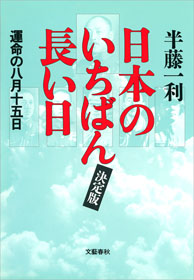
配信開始日 2001/07/20
近代日本の"運命の一日"を描いた不朽の名作。
太平洋戦争を終結させるべく、天皇の「聖断」に従い和平への努力を続ける首相鈴木貫太郎をはじめとする人々と、徹底抗戦を主張して蹶起せんとした青年将校たち──。玉音放送を敢行しようとする政府関係者に対して、陸軍の一部軍人は近衛連隊を率いて皇居に乱入した。そのあまりにも対照的な動きこそ、この一日の長さを象徴するものであった。玉音放送が流れた昭和二十年八月十五日正午に至る一昼夜に繰り広げられた二十四幕の人間ドラマ。
1967年岡本喜八監督による映画化につづき、戦後七十年の2015年に再度映画化。主演 役所広司、本木雅弘、松坂桃李、堤真一、山崎努／監督 原田眞人
51
葉桜の季節に君を想うということ
歌野晶午
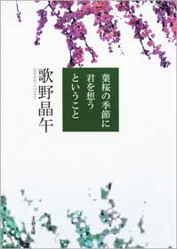
配信開始日 2017/12/05
ミステリー文学賞＆年末ランキング４冠！ 本格ミステリーの新時代を告げた記念碑的傑作！
かつては探偵事務所で働き、いまは「何でもやってやろう屋」を自称して気ままな生活を送る「俺」成瀬将虎。
ある日、高校の後輩のキヨシの頼みで、彼が密かに惚れている久高愛子の祖父の不審死と、高額で布団や健康食品を売りつける蓬莱倶楽部の調査を引き受ける。
そして同日、駅のホームで飛び込み自殺しようとした女・麻宮さくらを助けたことで、運命の歯車が回り始める──。
蓬莱倶楽部の悪徳商法を調査する将虎の軽妙なハードボイルド探偵の活躍を楽しむあなたに、ラストで襲い掛かる大どんでん返し!?
日本推理作家協会賞、本格ミステリ大賞ダブル受賞＆「このミステリーがすごい！」「本格ミステリベスト10」で第1位！
中居正広さんほか、たくさんの著名人も激賞！
二度読み必至の究極の徹夜本です。
52
色彩を持たない多崎つくると、彼の巡礼の年
村上春樹
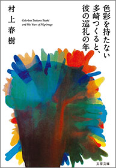
配信開始日 2015/12/04
多崎つくる、鉄道の駅をつくるのが仕事。名古屋での高校時代、四人の男女の親友と完璧な調和を成す関係を結んでいたが、大学時代のある日突然、四人から絶縁を申し渡された。
何の理由も告げられずに──。
死の淵を一時さ迷い、漂うように生きてきたつくるは、新しい年上の恋人・沙羅に促され、あの時なにが起きたのか探り始めるのだった。全米第一位にも輝いたベストセラー！
53
鍵のない夢を見る
辻村深月
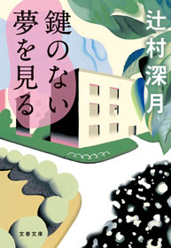
配信開始日 2015/07/10
望むことは、罪ですか？ 誰もが顔見知りの小さな町で盗みを繰り返す友達のお母さん、結婚をせっつく田舎体質にうんざりしている女の周囲で続くボヤ、出会い系サイトで知り合ったＤＶ男との逃避行──。普通の町に生きるありふれた人々に、ふと魔が差す瞬間、転がり落ちる奈落を見事にとらえる五篇。現代の地方の閉塞感を背景に、五人の女がささやかな夢を叶える鍵を求めてもがく様を、時に突き放し、時にそっと寄り添い描き出す。著者の巧みな筆が光る傑作。第147回直木賞受賞作！
54
民王
池井戸 潤
配信開始日 2014/08/01
夢かうつつか、新手のテロか？ 総理と息子の非常事態が発生。「お前ら、そんな仕事して恥ずかしいと思わないのか。目をさましやがれ！」漢字の読めない政治家、酔っぱらい大臣、揚げ足取りのマスコミ、バカ大学生が入り乱れ、巨大な陰謀をめぐる痛快劇の幕が切って落とされた。総理の父とドラ息子が見つけた真実のカケラとは!? 謎が謎をよぶ、痛快政治エンタメ！
2015年に父・遠藤憲一、息子・菅田将暉でドラマ化。
55
不倫
中野信子
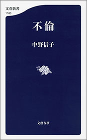
配信開始日 2018/07/20
不倫は危険です。ひとたびバレれば、容赦なくマスコミやネットでバッシングされます。有名人でなくても、社会的信用や家庭を失い、慰謝料など経済的なリスクも多大です。しかし、失うものが大きいとわかっているはずなのに、なぜ多くの不倫カップルがいるのでしょう？
近年の脳科学の劇的な進歩によって、「人類の脳の仕組みは一夫一婦制に向いているわけではない」ということがわかってきました。人類の祖先を含む哺乳類の多くは一夫多妻や乱婚でした。一夫一婦制が人類社内に根づき、「不倫=悪」という倫理観が出来たのは、長い進化の歴史から見るとごく最近のことです。今でも私たち人類の約5割は、「不倫型」の遺伝子を持っているのです。
また、私たちの生活には直接関係ないのに、有名人の不倫が発覚するやいなや「バッシング祭り」が始まるのはいったいなぜなのでしょう？
そこには、共同体の「フリーライダー」を検出して社会的制裁を加えたいという人間の本質的な欲望があります。「ズルをしておいしい思いをしている人」に敏感に反応し、そうした人を叩きのめすことが「正義」と信じて、バッシングを繰り広げるのです。バッシングには快楽がともなうという仕組みも、脳に備わっているのです。
本書は脳科学における最新の学術論文と科学的エビデンスをもとに、不倫をめぐる謎を解き明かします。興味深い動物実験、今では禁じられた危険な実験、歴史に残る不倫物語なども豊富に盛り込まれ、サイエンスに疎い読者も飽きさせません。
美人すぎる脳科学者による刺激的すぎる一冊！
56
七つの試練 池袋ウエストゲートパーク14
石田衣良
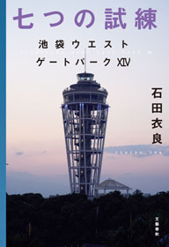
配信開始日 2018/09/14
常に現代を映し出す、超人気シリーズ第14弾！
SNSで課題をクリアして「いいね」を獲得するゲームが若者に流行。次第にエスカレートする課題に「いいね」欲しさに挑み、ある者は大怪我を、ある者は命を落とすという事態に......。怪我した高校生の妹と共に卑劣なゲームの管理人をあぶりだそうとするマコトとタカシが仕掛けた大掛かりなトラップとは。
スキャンダル一発ですべてを失う芸能人、お手軽な欲望が横行する出会いカフェ、病んだ身内をひた隠しにする親族監禁──どこか現実の事件を思わせる事件を、池袋のトラブルシューター、マコトとGボーイズを率いるキング、タカシが軽やかに解決する4篇を収録。
＊本作品にはファーストシーズン 1から10巻までをまとめた『合本 池袋ウエストゲートパークＩ～Ｘ』もあります
57
リピート
乾 くるみ
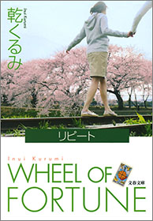
配信開始日 2008/03/20
もし、現在の記憶を持ったまま十ヵ月前の自分に戻れるとしたら？
ある日突然の電話で持ちかけられた、夢のような「リピート」の誘いに乗って、疑いつつも人生のやり直しに臨んだ十人の男女。ところが彼らは一人、また一人と不審な死を遂げて......。なぜ、犯人は「リピート」した者を狙うのか？ 犯人は十人の中にいるのか？
あの『イニシエーション・ラブ』の鬼才が、『リプレイ』＋『そして誰もいなくなった』に挑んだ仰天の傑作。驚愕のラストは絶対に見逃せない！
58
その日のまえに
重松 清

配信開始日 2010/02/20
余命の告知を受けた妻と、新婚時代のアパートを訪ねる僕たち...「その日のまえに」。妻の最期を、二人の息子とともに見届ける「その日」。妻が亡くなった病院の看護師さんから、ある日、お目にかかりたい、と連絡がきた...「その日のあとで」。消えゆく命を前にして、いったい何ができるのだろうか──。死と向かいあう人々の切なくもけなげな姿を描き、幸せの意味をみつめる連作短篇集。"王様のブランチ"で「BOOK大賞」を受賞した涙の感動作！
59
この日本で生きる君が知っておくべき「戦後史の学び方」 池上彰教授の東工大講義 日本篇
池上 彰
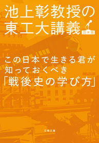
配信開始日 2015/07/10
敗戦から高度成長に至ったわけ、学校では教えない「日教組」、アベノミクスとバブルの教訓まで。池上彰教授のわかりやすい戦後史講義を実況中継！
歴史の授業ではなおざりにされがちな「日本の戦後史」ですが、社会に出るとこれほど「使える」分野はありません。そこで、池上彰教授の東工大講義シリーズ第２弾は、『この日本で生きる君が知っておくべき「戦後史の学び方」』。平成生まれの学生たちに、日本が敗戦から不死鳥のように甦った道筋から、現在の問題を解くヒントを教えます。「アベノミクスはバブルから学べるか？」「政権交代の不思議な歴史」「学校では絶対に教えない『日教組』」など、ビジネスパーソンにも参考になることばかり。
60
望郷
湊 かなえ

配信開始日 2016/09/02
暗い海に青く輝いた星のような光。
母と二人で暮らす幼い私の前に現れて世話を焼いてくれた"おっさん"が海に出現させた不思議な光。
そして今、私は彼の心の中にあった秘密を知る...日本推理作家協会賞受賞作「海の星」他、島に生まれた人たちの島への愛と憎しみが生む謎を、自らも瀬戸内の"島"に生まれたミステリの名手が、万感の思いを込めて描く。 心に刺さる連作短編集。
2016年ドラマ化。 出演：広末涼子、伊藤淳史、濱田岳ほか
61
株価暴落
池井戸 潤
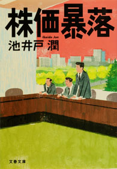
配信開始日 2014/08/01
巨大スーパー・一風堂を襲った連続爆破事件。企業テロを示唆する犯行声明に株価は暴落、一風堂の巨額支援要請をめぐって、白水銀行審査部の板東は企画部の二戸と対立する。一方、警視庁の野猿刑事にかかったタレコミ電話で犯人と目された男の父は、一風堂の強引な出店で自殺に追いこまれていた。「銀行の存在を賭けた戦い」をめぐる傑作金融エンタテイメント。
2015年織田裕二主演で連続ドラマ化された。
62
死神の精度
伊坂幸太郎
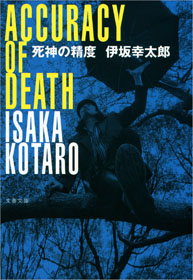
配信開始日 2008/03/20
こんな人物が身近に現れたら、彼／彼女は死神かもしれません──
（１）ＣＤショップに入りびたり
（２）苗字が町や市の名前と同じ
（３）会話の受け答えが微妙にずれていて
（４）素手で他人に触ろうとしない。
１週間の調査の後、死神は対象者の死に「可」「否」の判断を下し、「可」ならば翌８日目に死は実行される。ただし、病死や自殺は除外。まれに死神を感じる人間がいる。──クールでどこか奇妙な死神・千葉が出会う、６つの人生。金城武主演で映画化された原作です！
63
オンナの奥義 無敵のオバサンになるための33の扉
阿川佐和子／大石 静
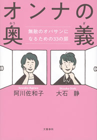
配信開始日 2018/01/30
『聞く力』シリーズが190万部のベストセラーとなる一方、2017年に"還暦婚"を果たした阿川佐和子さん64歳と、『ふたりっ子』『セカンドバージン』などのヒット作を誇る売れっ子脚本家で、実生活でも背徳の愛を重ねてきた大石静さん66歳。フツーではないオバサン二人が、究極のオンナの生き方を語り合う。
主なラインナップは下記の通り。
・アガワはなぜ、還暦すぎて入籍したのか
・新婚生活は「聞かない力」が大事
・夫婦長続きの秘訣は食べ物と笑いのツボ
・夫と彼氏の三者面談
・フラれて良かったと思うとき
・理不尽な父親とのつき合い方
・後悔しない親の送り方
・いつ"誘われて"も大丈夫な下着選び
・Tバックってあり？
・ホットフラッシュ、情緒不安定......更年期になったら周囲に宣言すべし！
・パワハラ&セクハラ禁止が男とテレビをダメにした
・「これしかない」という仕事を見つけよう
掛け値なしの"赤裸々本音トーク"です！
64
死神の浮力
伊坂幸太郎
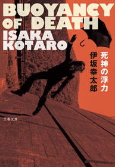
配信開始日 2017/09/01
娘を残虐に殺された小説家の山野辺は苦しみのなかにいた。
著名人であるが故にマスコミからの心無い取材に晒され、さらに犯人とされていた男・本城が第一審で無罪になったのだ。
しかし、山野辺は彼が犯人であることを「知っていた」。彼はサイコパスと呼ばれる反社会的人格者で、自分が犯人である証拠を、山野辺宛てに送ってきていたのだった──。
控訴の猶予期間は二週間。山野辺とその妻、美樹は一時的に自由の身になった本城を探し、動き始める。そこに千葉という男が現れ「本城の居場所を知っている」と言う。 山野辺夫妻は半信半疑ながらも、この妙な男と行動を共にすることにする。
山野辺夫妻・千葉チーム対サイコパス本城の勝負の行方は？
今回、千葉が「担当している」のは誰なのか？ そして調査の結果は？
65
朝が来る
辻村深月
配信開始日 2018/09/04
第147回直木賞、第15回本屋大賞の受賞作家が到達した新境地！
長く辛い不妊治療の末、栗原清和・佐都子夫婦は、民間団体の仲介で男の子を授かる。朝斗と名づけた我が子はやがて幼稚園に通うまでに成長し、家族は平穏な日々を過ごしていた。そんなある日、夫妻のもとに電話が。それは、息子となった朝斗を「返してほしい」というものだった──。
自分たちの子供を産めずに、特別養子縁組という手段を選んだ夫婦。
中学生で妊娠し、断腸の思いで子供を手放すことになった幼い母。
それぞれの葛藤、人生を丹念に描いた、胸に迫る長編。
河瀨直美監督も推薦！
「このラストシーンはとてつもなく強いリアリティがある。」（解説より）
66
知らなきゃよかった 予測不能時代の新・情報術
池上 彰／佐藤 優
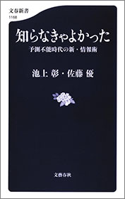
配信開始日 2018/08/20
累計70万部の最強コンビが放つ最新作！
プーチン、習近平、エルドアン......独裁がトレンドとなり、「自国ファースト」と「自国ファースト」がぶつかり合い、フェイクニュースと資料改竄がまかり通る現代の世界。
知れば知るほど「知らなきゃよかった」と思えることばかり......。
知りたくなかった、しかし目を逸らせない
リアルな情報と英知がここにある。
・米朝トップ会談とカジノの怪しい関係
・日本にはびこる「ハレンチ学園」と「暴力教室」
・なぜ官僚の劣化は止まらないのか？
・トランプ政権は「宮廷陰謀」の世界
・中国、ロシア、トルコ 独裁者たちの目指すもの
・国家を弱らせるのは欠陥教育だ など
新しい常識をインストールできた者だけが生き残る！
67
かばん屋の相続
池井戸 潤
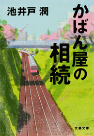
配信開始日 2014/08/01
働く男たちの愛憎、葛藤を描いた短編集。
池上信用金庫に勤める小倉太郎。その取引先「松田かばん」の社長が急逝した。残された二人の兄弟。会社を手伝っていた次男に生前、「相続を放棄しろ」と語り、遺言には会社の株全てを大手銀行に勤めていた長男に譲ると書かれていた。乗り込んできた長男と対峙する小倉太郎。父の想いはどこに？
表題作他、五編収録。
68
日本沈没 決定版【文春e-Books】
小松左京

配信開始日 2017/07/26
日本SF小説史上最大のヒット作、その決定版が電子書籍オリジナルで登場。
文庫の上下巻が一冊になりました。
日本各地で地震が続くなか、小笠原諸島近海にあった無人島が一晩で海中に沈んだ。
調査のため潜水艇に乗り込んだ地球物理学者の田所博士は、深海の異変を目の当たりにして、恐るべき予測を唱えた。
──早ければ二年以内に、日本列島の大部分は海面下に沈む！
田所博士を中心に気鋭の学者たちが地質的大変動の調査に取り組むと同時に、政府も日本民族の生き残りをかけて、国民の海外移住と資産の移転計画を進めようとする。
しかし第二次関東大震災をはじめ、様ざまな災害が発生。想定外のスピードで事態は悪化していく。はたして日本民族は生き残ることができるのか。
大災害やパニックのシミュレーションにとどまらず、組織論や危機管理論、日本人論といった様ざまな要素をもつ本作は時代を超えた輝きをはなっており、小説は上下二巻で発行総部数は460万部超。二度の映画化、テレビ化、マンガ化、いずれも大成功をおさめている。
●『日本沈没 決定版』の４大特長●
１．世界的なアーティストの生賴範義氏の作品を用いた電子版オリジナル表紙
２．電子書籍としては初の上下一体版
３．ストーリーが分かりやすくなるオリジナル図版を収録
４．初公開資料などを含め、名作誕生の秘話を遺族が詳細に解説
まだ読んでいない方はもちろん、小松左京氏の熱烈なファンまで満足できるコンテンツです。
69
極夜行
角幡唯介
配信開始日 2018/02/09
2018年Yahoo!ニュース | 本屋大賞 ノンフィクション本 大賞受賞作
探検家にとっていまや、世界中どこを探しても"未知の空間"を見つけることは難しい。大学時代から、様々な未知の空間を追い求めて旅をしてきた角幡唯介は、この数年冬になると北極に出かけていた。そこには、極夜という暗闇に閉ざされた未知の空間があるからだ。
極夜──「それは太陽が地平線の下に沈んで姿を見せない、長い、長い漆黒の夜である。そして、その漆黒の夜は場所によっては3カ月から4カ月、極端な場所では半年も続くところもある」（本文より）。彼は、そこに行って、太陽を見ない数カ月を過ごした時、自分が何を思い、どのように変化するのかを知りたかった。その行為はまだ誰も成し遂げていない"未知"の探検といってよかった。
シオラパルクという世界最北の小さな村に暮らす人々と交流し、力を貸してもらい、氷が張るとひとりで数十キロの橇を引いて探検に出た。相棒となる犬を一匹連れて。本番の「極夜の探検」をするには周到な準備が必要だった。それに3年を費やした。この文明の時代に、GPSを持たないと決めた探検家は、六分儀という天測により自分の位置を計る道具を用いたため、その実験や犬と自分の食料をあらかじめ数カ所に運んでおくデポ作業など、一年ずつ準備を積み上げていく必要があった。そしていよいよ迎えた本番。
2016年～2017年の冬。ひたすら暗闇の中、ブリザードと戦い、食料が不足し、迷子になり......、アクシデントは続いた。果たして4カ月後、極夜が明けた時、彼はひとり太陽を目にして何を感じたのか。足かけ4年にわたるプロジェクトはどういう結末を迎えたのか。
読む者も暗闇世界に引き込まれ、太陽を渇望するような不思議な体験ができるのは、ノンフィクション界のトップランナーである筆者だからこそのなせる業である。
70
合成生物学の衝撃
須田桃子
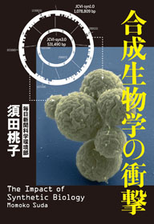
配信開始日 2018/04/13
二〇〇〇年代初頭、マサチューセッツ工科大学に集まった科学者たちは、生物学を工学化することを思いつく。
コンピュータ上でDNAを設計し、その生物を実際につくってみるのだ。
「合成生物学」と呼ばれるようになるその学問はビル・ゲイツをして「もっともホット」な分野と呼ばれるようになる。
企業が血眼になり、軍の研究機関が莫大な予算を投じる。
そうした中、孤高の天才科学者が二〇年かけてついに人工生命体を作ることに成功する。
ヒトまでも人工的につくる時代が来るのだろうか？
『捏造の科学者』で新たな科学ノンフィクションの地平を開いた著者が放つ大宅賞受賞後第一作！
71
点と線
松本清張
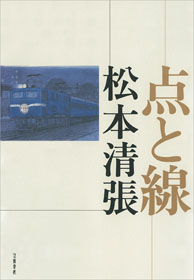
配信開始日 2003/05/20
ミステリ好きなら名前を知らぬ人がない名作。
舞台は昭和三十年代。福岡市香椎の岩だらけの海岸で寄り添う死体が見つかったのは、汚職事件渦中にある某省課長補佐と料亭の女中。青酸カリ入りのジュース瓶がのこされ、警察ではありふれた心中事件と考えた。しかし、何かがおかしい──と福岡の老警官と東京のヒラ刑事は疑問を抱く。うたがわしい政商は事件当時、鉄道で北海道旅行中。そのアリバイは鉄壁だった──時刻表トリックの古典にして、今も瑞々しい傑作ミステリ。
72
そして生活はつづく
星野 源

配信開始日 2015/10/09
俳優で音楽家、星野源はじめてのエッセイ集！
携帯電話の料金を払い忘れても、部屋が荒れ放題でも、人付き合いが苦手でも、誰にでも朝日は昇り、何があっても生活はつづいていく。ならば、そんな素晴らしくない日常を、つまらない生活をおもしろがろう！
音楽家で俳優の星野源、初めてのエッセイ集。俳優・きたろうとの文庫版特別対談「く...そして生活はつづく」も収録。
73
合本 翔ぶが如く（一）～（十）【文春e-Books】
司馬
太郎
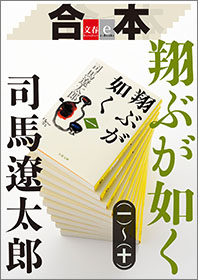
配信開始日 2014/12/12
司馬 太郎畢生の大長編、全十巻合本版。
西郷隆盛と大久保利通。ともに薩摩藩の下級藩士の家に生まれ、幼い時分から机を並べ、水魚の交わりを結んだ二人は、長じて明治維新の立役者となった。しかし維新とともに出発した新政府は内外に深刻な問題を抱え、絶えず分裂の危機を孕んでいた。明治六年、長い間くすぶり続けていた不満が爆発。西郷は自ら主唱した"征韓論"をめぐって大久保と鋭く対立する。それはやがて国の存亡を賭けた抗争にまで沸騰してゆく──。西郷と大久保、この二人の傑人を中心軸に、幕末維新から西南戦争までの激動を不世出の作家が活写する。
74
寝ながら学べる構造主義
内田 樹
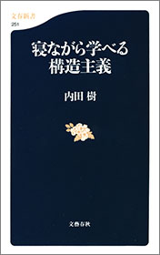
配信開始日 2004/04/20
なーんだ、そんなことだったのか！ フーコー、バルト、ラカン、レヴィ=ストロースと聞いて、難しそうと尻ごみするのは無用。本書を一読すれば「そうかそうか」の連続です
構造主義は現代思想の代表みたいにいわれるけれど、一体どんな思想なんだろう。そう思って解説書を手にとれば、そこには超難解な言い回しや論理の山。ああ、やっぱり現代思想は難しい......。そんな挫折を味わった方はぜひ本書を。フーコー、バルト、レヴィ=ストロース、ラカンといった構造主義の主唱者たちは、要するに何が言いたかったのか、「思想の整体師」の異名をもつ著者が、噛んで含めるように説き明かします。「そうか、そうだったのか」の連続となること必定です。
75
女のいない男たち
村上春樹
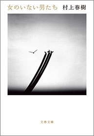
配信開始日 2016/10/07
舞台俳優・家福をさいなみ続ける亡き妻の記憶。彼女はなぜあの男と関係したのかを追う「ドライブ・マイ・カー」。
妻に去られた男は会社を辞めバーを始めたが、ある時を境に店を怪しい気配が包み謎に追いかけられる「木野」。
封印されていた記憶の数々を解くには今しかない。見慣れたはずのこの世界に潜む秘密を探る６つの物語。
76
この社会で戦う君に「知の世界地図」をあげよう 池上彰教授の東工大講義
池上 彰
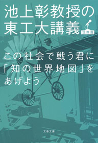
配信開始日 2015/03/13
東京工業大学の教授に就任した池上彰さん。理系学生への講義の内容が一冊に。「悪い会社・優れた経営者の見分け方」「なぜ優秀な理系学生がオウム真理教に？」「君ならサムスンに移籍するか？」「日本国憲法は改正すべきか」「リーマン・ショックとは何だったのか」「君は年金に入るべきか」「なぜ反日運動が起きるのか」etc.知るべきことを分かりやすく。ビジネスマンも必読です。
77
日本史のツボ
本郷和人
配信開始日 2018/01/19
日本史は暗記科目じゃない！
天皇、土地、宗教、軍事、地域、女性、経済。七つのツボを押さえれば、日本史の流れが一気につかめる。
最もコンパクトな日本通史、登場。
大事なのは疑問を出す力、仮説を立てる力、そして常識の力。
人気歴史学者が面白くかつ明快に日本史を解説する。
「天下分け目の関ヶ原」は三度あった
律令制は「絵に描いた餅」
応仁の乱、本当の勝者は？
銭が滅ぼした鎌倉幕府
皇位継承 ヨコとタテの違い
川中島の戦い、真の勝者は武田信玄
貴族と武士の年収は一桁違う？
などなど、目からウロコのトピックも満載
78
超一流になるのは才能か努力か？
アンダース・エリクソン／ロバート・プール／土方奈美・訳
配信開始日 2016/08/05
◎勉強、仕事、子育て すべてに応用可能の鉄則◎
著者のアンダース・エリクソン教授は、「超一流」研究の第一人者。
『タイム』『ニューヨーク・タイムズ』をはじめ、各紙誌で取り上げられ、世界中から大きな注目を集めた自身の研究結果の全てを、本書で初公開！
チェス、バイオリン、テニス、数学......。
世界中のトッププレーヤーたちを、30年以上にわたって科学的に研究。
そして導き出された「超一流」への鉄則とは？
鉄則（１）自分の能力を少しだけ超える負荷をかけつづける
鉄則（２)「これで十分」の範囲にとどまっていると、一度身につけたスキルは落ちていく
鉄則（３）ループではなく、一人で没頭する時間を確保する
鉄則（４）自分の弱点を特定し、それを克服するための課題を徹底的に繰り返す
鉄則（５）練習を「楽しい」と感じていては、トッププレーヤーにはなれない
鉄則（６）これ以上集中できないと思った時点で練習や勉強はうちきる
鉄則（７）上達が頭打ちになったときは、取り組むメニューを少しだけ変えてみる
鉄則（８）即座にフィードバックを得ることで、学習の速度は劇的に上がる
鉄則（９）オンの時間とオフの時間をはっきり分け、一日のスケジュールを組む
鉄則（10）どんな能力も生まれつきの才能ではなく、学習の質と量で決まる
「超一流」と「一流」を分ける差はどこにあるのか。30年以上にわたり、「超一流」たちを心理学・生理学・神経解剖学の目から研究してきたエリクソン教授が、その核心を解き明かす！
79
合本 ダブル・ファンタジー【文春e-Books】
村山由佳
配信開始日 2015/05/29
奈津・三十五歳、脚本家。尊敬する男に誘われ、家を飛び出す。"外の世界"に出て初めてわかった男の嘘、夫の支配欲、そして抑圧されていた自らの性欲の強さ──。
もう後戻りはしない。女としてまだ間に合う間に、この先どれだけ身も心も燃やし尽くせる相手に出会えるだろう。何回、脳みそまで蕩けるセックスができるだろう。そのためなら──、そのためだけにでも、誰を裏切ろうが、傷つけようがかまわない。
「そのかわり、結果はすべて自分で引き受けてみせる」
80
勝手にふるえてろ
綿矢りさ
配信開始日 2012/11/16
私には彼氏が二人いる──中学時代からの不毛な片思いの相手と、何とも思ってないのに突然告白してきた暑苦しい同期。26歳まで恋愛経験ゼロ、おたく系女子の良香は"脳内片思い"と"リアル恋愛"のふたつを同時進行中。当然アタマの中では結婚も意識する。しかし戸惑いと葛藤の連続で......悩み、傷つき、ついにはありえない嘘で大暴走!? 良香は現実の扉を開けることができるのか？ 切なくキュートな等身大の恋愛小説。単行本未収録「仲良くしようか」も収録！
81
龍馬史
磯田道史
配信開始日 2016/03/25
坂本龍馬を斬ったのは誰か？ 黒幕は？ 幕末最大のミステリーに挑んだ
気鋭の歴史家が、史料の丹念な読解と巧みな推理でついに謎を解きあかした。
自筆の書状から龍馬の内面に迫り、龍馬が生きた幕末という時代、土佐藩の事情などを一つ一つ検証。既成の枠にとらわれない自由な発想の持ち主が生まれた背景にも迫ります。
坂本龍馬の生涯をたどることで、複雑な幕末史が分かる。
82
世界を変えた14の密約
ジャック・ペレッティ／関 美和・訳
配信開始日 2018/05/30
私たちの日常生活を根底から変えたのが、政治家や国際事件ではなく役員室やゴルフコースやバーによって秘密裏に交わされた企業による密約（ディール）だったら？
イギリスを代表するジャーナリストが世界のタブーを徹底追及。英BBCが番組化、大反響！
【現金の消滅】
1998年、スタンフォード大学。のちのペイパル創業者達が出会い、始まった。
【熾烈な格差】
2009年、中間層消滅を予言した銀行家。富裕層OR貧困層ビジネスへと舵が切られた。
【ダイエット基準】
ダイエット関連業界の儲けのために、BMIを27から25に引き下げ、肥満人口を増やす。
【買い替え強制の罠】
1932年、電球の寿命が6カ月に決められる。アップル製品のバッテリー問題も。
【フェイクニュースの氾濫】
1981年、マードックとサッチャーが取引。有名メディアが買い取られる。
ほかにも、【投機リスク】【租税回避のカラクリ】【薬漬け】【改革されない働き方】【新自由主義の誕生】【企業の政府支配】【AIに酷使される未来】【知性の取引】【21世紀のインフラ】にまつわる密約が明らかに。
もし、私たちの世界の見方が間違っていたら？ 私たちの日常生活を根底から変えたのが政治家や国際的な事件ではなく役員室やゴルフコースやバーで秘密裏に交わされた企業による密約（取引）だったら？ 気鋭のジャーナリストによる恐ろしくもスリリングな一冊！
83
チェ・ゲバラ伝 増補版
三好 徹
配信開始日 2014/04/11
１冊でたどる「チェ・ゲバラ」の生涯
南米アルゼンチンの裕福な家に生まれ、医師になるも、貧困と圧政と腐敗の覆う現実を憂い、キューバ革命へと身を投じたチェ・ゲバラ。彼はどのように生き、どのように死んだのか。いまなお全世界で語られる伝説の男、ゲバラを描いた不朽の傑作評伝に、さらに判明した事がらを書き加えた増補最新版。
84
八咫烏シリーズ外伝 しのぶひと【文春e-Books】
阿部智里
配信開始日 2017/07/28
新世代和風ファンタジー「八咫烏シリーズ」外伝
端午の節句で「角落とし」と呼ばれる神事の花形射手を務めた雪哉。その成長ぶりに驚いた桜花宮の筆頭女房・真赭の薄のもとに、思いがけない縁談の話が......。
第四巻『空棺の烏』の舞台・勁草院での二年目にあたる草牙時代のエピソード。
85
八咫烏シリーズ外伝 すみのさくら【文春e-Books】
阿部智里
配信開始日 2017/08/04
新世代和風ファンタジー「八咫烏シリーズ」外伝
突然、南家当主の姫君の身分を剥奪された墨子。理由も分からないまま両親の死を知らされ、山烏の孤児たちと暮らしていたある日、宗家の若宮がやってくる。
第一巻『烏に単は似合わない』で浜木綿が見せた行動の理由とは。彼女の忘れられない過去を描く短篇。
86
お金さま、いらっしゃい！
高田かや
配信開始日 2018/06/08
生まれ育った「カルト村」（所有のない社会を目指す、農業を基盤としたコミューン）の思い出を描いた『カルト村で生まれました。』『さよなら、カルト村。 思春期から村を出るまで』で話題となった高田かやの新作コミックエッセイ。
どんなに働いても対価はもらえず、物は共有でお金のやりとりは一切なし、当然子供のお小遣いは0円で、隠し持っているお金が大人に見つかったら即没収......。そんな「カルト村」で育ったことから、「お金は滅多にさわれないすごいもの」「お金さま！」とお金そのものへの憧れが人一倍強くなってしまった著者が、19歳で村を出て両親との同居生活→ひとり暮らし→結婚して夫の家族と二世帯住宅暮らし......と環境を変えながら、自由に持つことができなかった「お金」とどう付き合ってきたか？ を包み隠さず丁寧に描く。
お金が貯まる心構えやリメイク料理など節約術も学べ、お金に対する感覚の違う夫婦の生活を覗き見る楽しさもあり。
読めばお金が貯まるかも!?
〈かや流"お金さま"との付き合い方〉
村時代に染みついた「我慢」で貯金/買い物トレーニングに100均活用
どこで何を買ったか値段も含め毎日メモ/財布の残金は1円単位まで把握
車の免許など必要なものにはドーンと使う/安い発泡酒に焼酎を足して度数アップ
自己流の「宝くじ必勝法」を考案/料理も服もリメイクして2倍楽しむ
食材にひと手間加えて保存力アップ/「夫婦50割」などお得制度をどんどん活用
87
もう、きみには頼まない石坂泰三の世界
城山三郎
配信開始日 2003/10/20
無事是貴人──何事も無いのが最上の人生。この言葉を信条としながらも、頼まれたらどんな難事も引き受け取り組んだ実業家・石坂泰三。
第一生命を日本有数の保険会社にし、労働争議で危機を迎えた戦後の東芝を立て直し、経団連会長として日本経済の復興を任され、国家事業となった大阪万国博覧会を成功に導く。まるで流れのままに身をゆだねるような人生を歩みながら、一方で、どんな権力者にもおもねらず、あくまで自由競争を旨としたその経営哲学を、城山三郎が描く。
88
ユニクロ潜入一年
横田増生
配信開始日 2017/10/27
ワンマン経営に疲弊する現場を克明に描く潜入ルポルタージュの傑作！
サービス残業、人手不足、パワハラ、無理なシフト、出勤調整で人件費抑制──。
「（批判する人は）うちの会社で働いてもらって、どういう企業なのかをぜひ体験してもらいたい」
そんな柳井正社長の言葉に応じ、ジャーナリストはユニクロの店舗への潜入取材を決意。妻と離婚し、再婚して、姓を妻のものに変え、面接に臨んだ──。
「週刊文春」誌上で大反響を呼んだ「ユニクロ潜入ルポ」をもとに、一年にわたる潜入取材の全貌を書き下ろした。読む者をまさにユニクロ店舗のバックヤードへと誘うかのような現場感に溢れたルポルタージュである。気鋭のジャーナリストが強い意志をもち、取材に時間をかけ、原稿に推敲を重ねた読み応えのあるノンフィクション作品が誕生した。
89
送り火
高橋弘希
配信開始日 2018/07/17
第159回芥川賞受賞作
自然は沈黙し、少年たちは血の遊戯に熱狂する
東京から山間の町に引越した中学三年生の歩。
うまくやってきたはずだった。あの夏、河へ火を流す日までは。
注目の俊英、渾身作！
90
半分、青い。 上
北川悦吏子
配信開始日 2018/08/03
心は、空を飛ぶ。
片耳を失聴したヒロイン、スズメの愛と勇気の物語──。
高度成長期の終わり、岐阜県の小さな食堂に生まれたスズメ。
小学生の時に病気で左耳を失聴してしまうが、我が子を愛してやまない両親と、同じ日に同じ病院で生まれた幼馴染のリツに支えられ健やかに成長する。
高校を卒業したスズメは少女漫画家を目指し上京し、人気漫画家・秋風羽織のもとで仲間と修業に打ち込む......。
互いの道を歩み始めた幼なじみの律と鈴愛を待ち受ける運命とは。
ドラマで放送されなかった、著者渾身のセリフも収録された完全版。半世紀にわたる物語、感動の完結。
＊本作品には上下巻を１冊にまとめた『合本 半分、青い。』もあります
91
知性は死なない 平成の鬱をこえて
與那覇潤
配信開始日 2018/04/06
世界史の視野から、精緻に日本を解析した『中国化する日本』で大きな反響を呼んだ筆者。一躍、これからを期待される論客となりましたが、その矢先に休職、ついには大学を離職してしまいます。
原因は、躁うつ病でした。
本書では、自身の体験に即して、「うつ」の正しい理解を求めるべく、病気を解析し、いかに回復していった過程がつづられています。
とともに、そもそも、なぜこんなことになってしまったのか、と筆者は、苦しみのなかで、自分に問いかけます。
──自分を培ってきた「平成」、その30年の思潮とは何だったのか。
いま大学は、「知性」を育む場となりえているのか。
喧伝される「反知性主義」は、どこから始まったのか。
なぜ知識人は敗北し、リベラルは衰退したのだろう──
一度、知性を抹消された筆者だからこそ、語れることがあるのです。
病を治すのも、また「知」なのだ、と。
これから「知」に向かおうとするすべての人に読んでほしい、必読の一冊です。
92
イン・ザ・プール
奥田英朗
配信開始日 2006/07/20
体調不良のはずが水泳中毒に、ケータイがないと冷や汗がでる、勃起して、ずーっとそのまま直らない。藁をもつかむ思いで訪れた神経科で患者たちを待っていたのは──とてつもなくヘンな医者だった！
カバと見まごう巨体を揺らし、度外れた好奇心で患者の私生活に踏み込み、やりたい放題。でもなぜか病は快方へ......？
続篇『空中ブランコ』で直木賞受賞、現代世相の病理をコミカルかつ軽妙な筆致で描き出す。精神科医・伊良部の突出した存在感が笑いを招く！
93
ゲゲゲの鬼太郎 CHARACTER BOOK ねこ娘大全
監修 水木プロ／東映アニメーション／岩佐陽一
配信開始日 2018/10/02
約50年の歴史を持つアニメ『ゲゲゲの鬼太郎』。現在放送中の第６期では、ねこ娘がモデル体型の美少女となり、"ツンデレ"なキャラクターと合わせて多くの視聴者の支持を集めました。本電子書籍では、その第６期ねこ娘を中心に、設定画＆名場面集、声優・スタッフインタビューなどで歴代のねこ娘の魅力を徹底解説。さらに描き下ろしのねこ娘イラストを５種収録しました。『ゲゲゲの鬼太郎』ファン、ねこ娘ファン必読の内容となっています。
■おもな目次
【妖怪復活！ 第６期『ゲゲゲの鬼太郎』】
・豪華描き下ろしねこ娘イラスト５種
・鬼太郎ファミリーとねこ娘の活躍を総まとめ！ 第1～26話ハイライト集
・INTERVIEW 庄司宇芽香（ねこ娘役）／永富大地（プロデューサー）／小川孝治（シリーズディレクター）／清水空翔（キャラクターデザイン・総作画監督）
【名場面＆秘蔵資料で振り返る 猫娘の歴史】
・第１期～第５期猫娘 設定画＆名場面集
・三田ゆう子（第３期ネコ娘役）に３つの質問／西村ちなみ（第４期ねこ娘役）に３つの質問
・INTERVIEW 今野宏美（第５期ネコ娘役）
【『ゲゲゲの鬼太郎』が50年愛される理由】
第３期編集・第４期プロデューサー 清水慎治
94
八咫烏外伝 烏百花 蛍の章
阿部智里
配信開始日 2018/05/10
電子版特典として著者による切り絵とショートエッセイを収録
八咫烏外伝 烏百花 蛍の章
累計100万部に育ったヒットシリーズの番外作品集。第一部全6巻の壮大な歴史の流れの中、キャラクターたちは一方でどんな人間関係を結び、どんな風に育ち、事件の裏側でなにを思っていたのか。本編で描かれることがなかったそれぞれの物語には、著者ならではの深い人間観、切れ味鋭くキラキラした直球の感動と展開が満ちています。
オール讀物に一編ずつ掲載され、電子書籍でも快調な売り上げを記録する4編「しのぶひと」「ふゆきにおもう」「すみのさくら」「まつばちりて」に加え、ファンの間でも熱い関心の的である二人の恋愛の萌芽を描く「わらうひと」、シリーズ人気沸騰の立役者・雪哉と若宮が軽妙なやりとりを展開する「ゆきやのせみ」の二編を書き下ろし。
後に控える「第二部」の前に、ファンには喉から手が出るほど魅惑的な短編集となることはもちろん、本編を読んでいない人にも、異世界が舞台のリアルで鮮烈な人間ドラマ集として強くアピールできるはず。天才・阿部智里の世界を知る格好の一冊です。
電子書籍版限定で、著者が本編のある場面をイメージして作成した切り絵と、切り絵と創作にまつわるショートエッセイを収録しています！
95
シャイロックの子供たち
池井戸 潤
配信開始日 2013/08/02
「半沢直樹」シリーズのドラマ化で大ブレイクした著者が、「ぼくの小説の書き方を決定づけた記念碑的な一冊」と語る本作。
とある銀行の支店で起きた現金紛失事件。女子行員に疑いがかかるが、別の男が失踪!? "叩き上げ"の誇り、格差のある社内恋愛、家族への思い、上がらない成績......事件の裏に透ける行員たちの人間的葛藤。銀行という組織を通して、普通に働き、普通に暮らすことの幸福と困難さを鮮烈に描いた傑作群像劇。
96
やせる力 骨ストレッチ
松村 卓
配信開始日 2016/07/01
注目の「骨ストレッチ」で部分痩せを実現
骨を意識して身体をゆるめる「骨ストレッチ」の部分痩せメソッドを紹介。顔、お腹、二の腕など女性が気になる7パーツが細くなる！
Chapter1 顔 ......顔や首のたるみが取れ、小顔になれる。
Chapter2 ウエスト ......脇腹の可動域が広がり、くびれがつくれる。
Chapter3 お腹 ......丹田が刺激され、下腹が引っ込む。
Chapter4 背中 ......肩甲骨一帯がほぐれ、たるみが解消。
Chapter5 二の腕 ......効率よく腕全体が動き、"プルプル"が改善。
Chapter6 脚 ......股関節がほぐれ、むくみがすっきり。
Chapter7 お尻 ......スクワット効果で、ヒップラインが引き締まる。
97
錆びた滑車
若竹七海
配信開始日 2018/08/03
タフで不運な女探偵・葉村晶史上、最悪最低の事件が幕を開ける！
晶は尾行していた老女・石和梅子と青沼ミツエの喧嘩に巻き込まれる。ミツエの持つ古い木造アパートに移り住むことになって晶に、交通事故で重症を負い、記憶を失ったミツエの孫・ヒロトは、なぜ自分がその場所にいたのか調べてほしいと依頼する──。
解説・戸川安宣
98
江戸の備忘録
磯田道史

配信開始日 2016/03/25
なぜ信長は殺されたのか？ 教育パパ家康が子どもたちに学ばせたものは？ 江戸時代の教育事情は？
『武士の家計簿』『無私の日本人』など、著書が続々と映画化されている気鋭の歴史家が、広く、深く、日本史を見わたせるような歴史のトピックを厳選。かろやかな語り口を楽しむうちに、いつのまにか日本の歴史のたどり方が身につくエッセイ集。
99
コーヒーもう一杯
重松 清
配信開始日 2012/06/20
19歳の頃、当時同棲中だった３歳上の彼女がバザーでコーヒーミルを買った。早速マンデリンの豆を挽き、丁寧にコーヒーを淹れてくれた。「ねえ、もう一杯お代わりしない？」何事にも想像力に乏しく幼かった僕には、昨夜帰省先から戻った彼女に訊きたくても訊けないことがあった。もやもやした気持ちで苦いコーヒーを啜っていると、彼女が「とても大切な話」を切り出した...。
これは「忘れられない香り」の記憶をテーマとして競作されたアンソロジーの一篇です。
100
合本 鬼平犯科帳（一）～（二十四）【文春e-Books】
池波正太郎
配信開始日 2014/11/21
池波正太郎の永遠のベストセラー「鬼平犯科帳」シリーズ。
江戸幕府の火付盗賊改方（ひつけとうぞくあらためかた）の長官・長谷川平蔵は、その取り締まりの豪腕ぶりで、世の盗賊たちから"鬼の平蔵"と恐れられている。しかし、その素顔は「妾腹の子」として育った苦労人。昔は放蕩無頼の限りを尽くし、義理も人情も心得て、ときには捕らえた盗賊にも情けをかける、心優しき男。
筆頭与力の佐嶋忠介、平蔵の長男・宣義、妻の久栄、平蔵の腹違いの妹・お園など、馴染みの顔ぶれが大活躍！
テレビドラマ化、舞台化、漫画化など、日本人では知らぬ者のいない大人気の鬼平シリーズを全話収録したシリーズ全24巻（文春文庫）が、電子書籍の合本として登場。

【あ行】
阿川佐和子／大石 静
阿部智里
『八咫烏シリーズ外伝 まつばちりて【文春e-Books】
』
『八咫烏シリーズ外伝 ふゆきにおもう【文春e-Books】
』
『八咫烏シリーズ外伝 あきのあやぎぬ【文春e-Books】
』
『八咫烏シリーズ外伝 ゆきやのせみ【文春e-Books】
』
『八咫烏シリーズ外伝 すみのさくら【文春e-Books】
』
アンダース・エリクソン／ロバート・プール／土方奈美・訳
池井戸 潤
『オレたちバブル入行組
』
『オレたち花のバブル組
』
『民王
』
『株価暴落
』
『かばん屋の相続
』
『シャイロックの子供たち
』
池上 彰
『学校では教えない「社会人のための現代史」 池上彰教授の東工大講義 国際篇
』
『世界を変えた10冊の本
』
『この日本で生きる君が知っておくべき「戦後史の学び方」 池上彰教授の東工大講義 日本篇
』
『この社会で戦う君に「知の世界地図」をあげよう 池上彰教授の東工大講義
』
池上 彰／佐藤 優
池波正太郎
『合本 鬼平犯科帳（一）～（二十四）【文春e-Books】
』
伊坂幸太郎
『死神の精度
』
『死神の浮力
』
石田衣良
磯田道史
『龍馬史
』
『江戸の備忘録
』
乾 くるみ
『イニシエーション・ラブ
』
『リピート
』
歌野晶午
内田 樹
『寝ながら学べる構造主義
』
エドワード・ルトワック／奥山真司・訳
奥田英朗
『イン・ザ・プール
』
【か行】
角幡唯介
『極夜行
』
勝間和代
川村元気
『億男
』
監修 テレビ朝日
北川悦吏子
『半分、青い。 上
』
清原和博
『清原和博 告白
』
黒川博行
『泥濘
』
小松左京
【さ行】
相良敦子
『お母さんの「敏感期」 モンテッソーリ教育は子を育てる、親を育てる
』
ジェイコブ・ソール／村井章子・訳
『帳簿の世界史
』
重松 清
『その日のまえに
』
『コーヒーもう一杯
』
雫井脩介
司馬 太郎
『最後の将軍 徳川慶喜
』
島本理生
『ファーストラヴ
』
ジャック・ペレッティ／関 美和・訳
『世界を変えた14の密約
』
城山三郎
須田桃子
『合成生物学の衝撃
』
関口賢（関口鍼灸治療院）
セキュリティ集団スプラウト
『闇ウェブ
』
先崎 学
【た行】
高杉 良
『辞令
』
高田かや
『カルト村で生まれました。
』
『お金さま、いらっしゃい！
』
高橋弘希
『送り火
』
瀧波ユカリ
『ありがとうって言えたなら
』
陳 浩基
『13・67
』
辻村深月
『鍵のない夢を見る
』
『朝が来る
』
堂場瞬一
【な行】
中野信子
『サイコパス
』
『不倫
』
中村和孝・撮影／文藝春秋電子書籍編集部・編
『デジタル原色美女図鑑 渡辺麻友 ひとりだち【文春e-Books】
』
【は行】
萩庭桂太・撮影／文藝春秋電子書籍編集部・編
濱 嘉之
半藤一利
姫野カオルコ
『彼女は頭が悪いから
』
星野 源
『そして生活はつづく
』
堀 栄三
本郷和人
『日本史のツボ
』
【ま行】
又吉直樹
『火花
』
松村 卓
『ゆるめる力 骨ストレッチ
』
『やせる力 骨ストレッチ
』
松本清張
『点と線
』
監修 水木プロ／東映アニメーション／岩佐陽一
『ゲゲゲの鬼太郎 CHARACTER BOOK ねこ娘大全
』
湊 かなえ
『望郷
』
宮下奈都
『羊と鋼の森
』
三好 徹
『チェ・ゲバラ伝 増補版
』
村上春樹
『女のいない男たち
』
村上世彰
『生涯投資家
』
村田沙耶香
『コンビニ人間
』
村山由佳
【や行】
安彦良和
『我が名はネロ １
』
山本七平
『「空気」の研究
』
横田増生
『ユニクロ潜入一年
』
與那覇潤
【わ行】
若竹七海
『錆びた滑車
』
若林正恭
『ナナメの夕暮れ
』
綿矢りさ
『勝手にふるえてろ
』

【あ行】
『朝が来る
』
辻村深月
堂場瞬一
『ありがとうって言えたなら
』
瀧波ユカリ
『13・67
』
陳 浩基
『イニシエーション・ラブ
』
乾 くるみ
『イン・ザ・プール
』
奥田英朗
先崎 学
『江戸の備忘録
』
磯田道史
『お母さんの「敏感期」 モンテッソーリ教育は子を育てる、親を育てる
』
相良敦子
『お金さま、いらっしゃい！
』
高田かや
『億男
』
川村元気
『送り火
』
高橋弘希
『オレたち花のバブル組
』
『オレたちバブル入行組
』
池井戸 潤
『女のいない男たち
』
村上春樹
阿川佐和子／大石 静
【か行】
『鍵のない夢を見る
』
辻村深月
『学校では教えない「社会人のための現代史」 池上彰教授の東工大講義 国際篇
』
池上 彰
『勝手にふるえてろ
』
綿矢りさ
『合本 鬼平犯科帳（一）～（二十四）【文春e-Books】
』
池波正太郎
雫井脩介
司馬 太郎
村山由佳
司馬 太郎
『彼女は頭が悪いから
』
姫野カオルコ
『かばん屋の相続
』
『株価暴落
』
池井戸 潤
『カルト村で生まれました。
』
高田かや
『極夜行
』
角幡唯介
『清原和博 告白
』
清原和博
『「空気」の研究
』
山本七平
『ゲゲゲの鬼太郎 CHARACTER BOOK ねこ娘大全
』
監修 水木プロ／東映アニメーション／岩佐陽一
関口賢（関口鍼灸治療院）
『合成生物学の衝撃
』
須田桃子
『コーヒーもう一杯
』
重松 清
『この社会で戦う君に「知の世界地図」をあげよう 池上彰教授の東工大講義
』
『この日本で生きる君が知っておくべき「戦後史の学び方」 池上彰教授の東工大講義 日本篇
』
池上 彰
『コンビニ人間
』
村田沙耶香
【さ行】
『最後の将軍 徳川慶喜
』
司馬 太郎
『サイコパス
』
中野信子
『錆びた滑車
』
若竹七海
高田かや
村上春樹
『死神の精度
』
『死神の浮力
』
伊坂幸太郎
『シャイロックの子供たち
』
池井戸 潤
『生涯投資家
』
村上世彰
堀 栄三
池上 彰／佐藤 優
『辞令
』
高杉 良
『世界を変えた14の密約
』
ジャック・ペレッティ／関 美和・訳
『世界を変えた10冊の本
』
池上 彰
『そして生活はつづく
』
星野 源
『その日のまえに
』
重松 清
【た行】
『闇ウェブ
』
セキュリティ集団スプラウト
『民王
』
池井戸 潤
『チェ・ゲバラ伝 増補版
』
三好 徹
與那覇潤
アンダース・エリクソン／ロバート・プール／土方奈美・訳
『帳簿の世界史
』
ジェイコブ・ソール／村井章子・訳
萩庭桂太・撮影／文藝春秋電子書籍編集部・編
『デジタル原色美女図鑑 渡辺麻友 ひとりだち【文春e-Books】
』
中村和孝・撮影／文藝春秋電子書籍編集部・編
『点と線
』
松本清張
監修 テレビ朝日
【な行】
石田衣良
『ナナメの夕暮れ
』
若林正恭
勝間和代
『日本史のツボ
』
本郷和人
小松左京
半藤一利
エドワード・ルトワック／奥山真司・訳
『泥濘
』
黒川博行
『寝ながら学べる構造主義
』
内田 樹
【は行】
濱 嘉之
歌野晶午
村上春樹
『半分、青い。 上
』
北川悦吏子
『羊と鋼の森
』
宮下奈都
『火花
』
又吉直樹
『ファーストラヴ
』
島本理生
『不倫
』
中野信子
『望郷
』
湊 かなえ
【ま行】
城山三郎
【や行】
『やせる力 骨ストレッチ
』
松村 卓
『八咫烏シリーズ外伝 あきのあやぎぬ【文春e-Books】
』
『八咫烏シリーズ外伝 すみのさくら【文春e-Books】
』
『八咫烏シリーズ外伝 ふゆきにおもう【文春e-Books】
』
『八咫烏シリーズ外伝 まつばちりて【文春e-Books】
』
『八咫烏シリーズ外伝 ゆきやのせみ【文春e-Books】
』
阿部智里
『ユニクロ潜入一年
』
横田増生
『ゆるめる力 骨ストレッチ
』
松村 卓
【ら行】
村上春樹
『リピート
』
乾 くるみ
『龍馬史
』
磯田道史
【わ行】
『我が名はネロ １
』
安彦良和
本書は、電子書籍オリジナル編集です。

文春ｅ‐Ｂｏｏｋｓ
2018文 藝 春 秋 電 子 書 籍 ベスト100
2018 Bungeishunju e-books Best 100
２０１８年１２月２０日 発行
編 文藝春秋
発行人 柏原光太郎
発行所 株式会社 文藝春秋
東京都千代田区紀尾井町３─２３
郵便番号 １０２─８００８
電話 ０３─３２６５─１２１１
〈ご注意〉
本作品の全部または一部を、著作権者ならびに株式会社文藝春秋に無断で、複製（コピー）、転載、改ざん、公衆送信（ホームページなどに掲載することを含む）することを禁じます。万一このような行為をすると、著作権法違反で処罰されます。
〈お断り〉
本作品を電子書籍に収録するにあたり、一部の漢字が簡略体で表示される場合があります。また、ご覧になる機種により、表示の差が認められる場合があります。